第２ 【事業の状況】
１ 【経営方針、経営環境及び対処すべき課題等】
文中の将来に関する事項は、当連結会計年度末現在において、当社グループが判断したものであります。
(1) 経営方針
わが国は少子高齢化や人口減少等の構造的課題を抱える中、足元ではＡＩを始めとしたデジタル技術の発展と日常への浸透、データ利活用の高度化による社会・経済構造の転換、人々の働き方や価値観の多様化といったメガトレンドは加速しています。加えて、地政学リスクの高まりやグローバル化の揺り戻しといった「分断」の顕在化、円金利の上昇等、当社を取り巻く経営環境は大きく変化しています。こうした中、日本を含む世界各国における政策がマクロ経済や金融市場に与える影響を見極める必要があります。
当社は、こうした状況を正しく読み解いたうえで、当社の広範なネットワークや多様なソリューションが持つ「つなぐ」機能を最大限発揮し、新しい時代において社会をリードする存在でありたいと考えています。一昨年度からの3年間を対象とした今中期経営計画を、当社を取り巻く経営環境が大きく変わる機会を捉えて「成長」を取りにいく3年間と位置付け、その結果として収益力向上やＲＯＥの改善、そして当社のパーパスである「世界が進むチカラになる。」を実現することを通じて、お客さま・株主・社員を始めとする全てのステークホルダーの期待に応えてまいります。
今中期経営計画では、前中期経営計画における取り組みを発展させ、成長戦略を進化させながら、社会課題解決への貢献にも取り組み、それらを支える企業変革を加速させてまいります。
地政学リスクやグローバル化の揺り戻しといった分断が顕在化する時代において、当社の広範なネットワークや多様なソリューションが持つ「つなぐ」機能を最大限発揮することで、経済的価値のみならず社会的価値も追求し、パーパス(世界が進むチカラになる。)の実現をめざします。

(2) 経営環境
当連結会計年度の金融経済環境でありますが、世界経済は、米国のトランプ政権の予測困難な政策運営が、関税政策等を通じて世界各国に様々な形で影響を与え続けたほか、ロシア・ウクライナ情勢やイランを巡る中東情勢などの地政学リスクが強く意識される展開となり、年度を通じて不確実性が高い状況が続きました。他方で、ＡＩ関連投資に象徴される世界の経済・社会構造の変化を促す経済活動が加速したほか、各国の政府・中央銀行が景気・物価の安定に向けて手を尽くしたことで、景気の極端な減速は避けられ、経済は全体として底堅さを保ちました。わが国では、様々な逆風を受けつつも、堅調な企業業績や人手不足等を背景に、賃上げの勢いが継続したほか、政府が「強い経済」の実現に向けた投資拡大を後押しする姿勢を見せる中、設備投資の増加も続き、景気は緩やかな回復基調を維持しました。
金融情勢に目を転じますと、株価は、2025年度初に米国の関税政策に起因する不透明感の高まりを受けて調整した後、振れを伴いつつも総じて堅調に推移しましたが、2025年度終盤の中東情勢の緊迫化等を受け、2025年度末にかけて軟調となりました。金利については、欧米では、中央銀行が昨年度に続き断続的な利下げを実施する中でも、各国政府の拡張的な財政政策への思惑などから、長期金利は全体として高水準で推移しました。わが国では、短期金利は、日本銀行による2025年12月の利上げに伴い上昇しました。長期金利は、日本銀行による漸進的な利上げと国債買入額の段階的な減額に加え、政府の財政政策を巡る市場の見方などを背景として、上昇基調で推移しました。ドル円相場は、日米金利差の縮小が進む中においても、わが国政府の積極財政が意識されたことなどから総じて円安基調で推移し、2025年度終盤には中東情勢の緊迫化に伴うドル買いの動きもあり、160円近傍まで円安が進みました。
(3) 対処すべき課題
今中期経営計画を「成長」を取りにいく3年間とするために、中期経営計画の3本柱として「成長戦略の進化」、「社会課題の解決」、「企業変革の加速」を定め、それぞれにおいて主要戦略の策定や優先課題の特定を行いました。
「成長戦略の進化」は、国内ではリテール顧客基盤の強化によりLife Time Valueの最大化を図るとともに、法人×ＷＭビジネスモデルを通じて承継ビジネスを強化いたします。海外では、ＧＣＩＢ・市場一体ビジネスモデルの進化による収益力向上、Partner Bankとの連携強化によるアジア成長の取り込みに取り組んでまいります。加えて、資産運用立国実現への貢献に向けた取り組みやＧＸ起点でのバリューチェーン支援を通じてお客さまへの提供価値の向上と事業基盤の強化を図るとともに、中長期的な成長に向けて新たな事業ポートフォリオ構築にも挑戦していきます。
「社会課題の解決」は、経済的価値とともに社会的価値を追い求めていくことが今後の企業価値向上の鍵であるとの認識のもと、「持続可能な社会」、「活力溢れる社会」、「強靭な社会」という3つの軸で10個の優先課題を選定し、課題解決に向けた取り組みを推進していきます。
「企業変革の加速」は、リスク管理やコンプライアンスの更なる向上に努めつつ、スピード改革を始めとするカルチャー改革の加速や、人的資本の拡充、システム開発リソースの増強、ＡＩ・データ基盤の強化といった経営基盤の強化に取り組んでまいります。
当社グループは、お客さま、社員、株主等、ステークホルダーの安全確保を最優先とし、社会機能の維持に不可欠な金融インフラとして、事業者の資金繰り支援等の施策を通じ、お客さま・社員・株主をはじめとする全てのステークホルダーの皆さまの期待に応えてまいります。
(A) 成長戦略の進化
(B) 社会課題の解決
(C) 企業変革の加速
(4) 目標とする経営指標
本中期経営計画では、中期経営計画の最終年度である2026年度の財務目標及び中長期ＲＯＥ目標を以下のとおり設定しております(2026年5月公表)。
〔ＲＯＥ目標・資本運営ターゲット〕
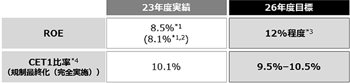
〔ＲＯＥ目標達成に向けた3つのドライバー〕
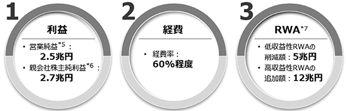
〔中長期ＲＯＥ目標〕
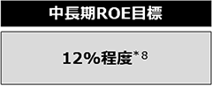
＊１ ＭＵＦＧ定義ＲＯＥ
＊２ Morgan Stanleyの持分法適用決算期の変更影響額除き
＊３ 東証定義ＲＯＥ。金融指標の前提は以下のとおり
本邦政策金利：1％程度、米国FF金利：3％台半ば、日経平均株価(2026年度末)：5万円台半ば、
ドル円(2026年度末)：150円台前半
＊４ 普通株式等Tier1比率。2029年3月末に適用される規制に基づく試算値。その他有価証券評価差額金を除く
＊５ 社内管理上の連結業務純益
＊６ 親会社株主に帰属する当期純利益
＊７ リスク・アセット
＊８ 前提条件は以下のとおり
本邦政策金利：1％程度、政策保有株式の削減による売却益：無し
２ 【サステナビリティに関する考え方及び取組】
文中の将来に関する事項は、当連結会計年度末現在において、当社グループが判断したものであります。
(1) サステナビリティ関連財務開示の作成方法について
① 全般的情報
当社グループのサステナビリティ関連財務開示は、当連結会計年度(2025年4月1日から2026年3月31日まで)を報告期間として作成しています。本サステナビリティ関連財務開示は、サステナビリティ開示基準(サステナビリティ基準委員会(ＳＳＢＪ)が開発した基準をいう。以下同じ。)のすべての定めには準拠していませんが、2027年3月期からのＳＳＢＪ基準の適用に向けて準備を進めており、当連結会計年度においては同基準のすべての定めを社内で検討のうえ作成しています。このため、以下の開示内容において、ＳＳＢＪ基準において参照が求められ、若しくは推奨されるガイダンスの情報源に言及しています。なお、本サステナビリティ関連財務開示は、比較情報を開示していません。本サステナビリティ関連財務開示は、2026年6月24日(公表承認日)に、当社の経営会議によって承認されています。
② ガイダンスの情報源に関する情報
(ガイダンスの情報源によって特定された産業)
当社グループが行う事業及びビジネス・モデルが金融サービスにおける幅広い業務を展開しており、中でも銀行業務、信託銀行業務、証券業務が当社グループの主要な業務であることに鑑み、ＳＡＳＢスタンダード(2025年12月最終改訂、以下同じ。)における当社グループに関連する産業として、次の産業を特定しています。
・ 商業銀行
・ 資産運用及び管理業務
・ 投資銀行及び仲介
(サステナビリティ関連のリスク及び機会の識別)
当社グループは、サステナビリティ関連のリスク及び機会を識別するにあたり、サステナビリティ開示基準を参考にしました。また、上記の産業の特定に基づき、商業銀行、資産運用及び管理業務、投資銀行及び仲介に関するＳＡＳＢスタンダードを参照し、当社グループ全体のリスク・機会を洗い出し、「短期」、「中期」及び「長期」にわたる影響の性質、発生可能性及び規模によって評価を行いました。その結果、当社グループの見通しに影響を与えると合理的に見込み得るサステナビリティ関連のリスク及び機会として、次のリスク及び機会を識別しました。
なお、当社グループは、これらのリスク及び機会の影響が生じると合理的に見込み得る時間軸について、「短期」、「中期」及び「長期」をそれぞれ以下のように定義しています。
短期：1年以内、中期：1年超5年以内、長期：5年超
当社グループの現行の中期経営計画が3年で策定されているところ、サステナビリティ関連のリスク及び機会は、より長期的な要因によって生じると考えられるため、「中期」の時間軸の上限を5年としています。
(識別したリスク及び機会に関する重要性がある情報の識別)
気候関連のリスク及び機会については、サステナビリティ開示テーマ別基準第2号「気候関連開示基準」の要求事項を踏まえて開示しています。
気候関連のリスク及び機会に関する重要性がある情報は、「(3) 気候」を参照ください。
人的資本関連の機会については、当該機会に具体的に適用される定めがサステナビリティ開示基準に存在しないため、資産運用及び管理業務、投資銀行及び仲介に関するＳＡＳＢスタンダードや同業他社の開示情報を参照しました。重要性がある情報の識別にあたっては、これらの情報源を参照し、当社グループにおける人的資本経営との整合を踏まえ検討を行いました。
人的資本関連の機会に関する重要性がある情報は、「(4) 人的資本」を参照ください。
サイバーセキュリティ関連のリスクについては、当該リスクに具体的に適用される定めがサステナビリティ開示基準に存在しないため、商業銀行に関するＳＡＳＢスタンダードや同業他社の開示情報を参照しました。重要性がある情報の識別にあたっては、これらの情報源を参照し当社グループのサイバーセキュリティ戦略との整合を踏まえ検討を行いました。
サイバーセキュリティ関連のリスクに関する重要性がある情報は、「(5) サイバーセキュリティ」を参照ください。
企業倫理(コンプライアンス)関連のリスクについては、当該リスクに具体的に適用される定めがサステナビリティ開示基準に存在しないため、商業銀行、資産運用及び管理業務、投資銀行及び仲介に関するＳＡＳＢスタンダードや同業他社の開示情報を参照しました。重要性がある情報の識別にあたっては、これらの情報源を参照し当社グループのコンプライアンス施策との整合を踏まえ検討を行いました。
企業倫理(コンプライアンス)関連のリスクに関する重要性がある情報は、「(6) 企業倫理(コンプライアンス)」を参照ください。
本サステナビリティ関連記載事項を作成する過程で行った判断のうち、サステナビリティ関連記載事項に含まれる情報に最も重大な影響を与える判断は、次のとおりです。
・ サステナビリティ関連のリスク及び機会の識別
(2) サステナビリティ全般
① ガバナンス
ⅰ．ガバナンス機関
当社グループでは、取締役会が、グループ全体のサステナビリティ関連のリスク及び機会について、監督する責任を負っています。
ガバナンス体制の詳細については、「
取締役会は、当社グループ全体における経営の基本方針を決定するとともに、経営監督機能を担います。また、監査委員会等を設置しており、取締役会の監督を補佐しています。加えて、サステナビリティに関する議論は、取締役会の監督のもと、経営会議の傘下にあるサステナビリティ委員会をはじめとした各種委員会にて行われています。
［監督機関］
［監督の役割、権限、義務などの記述及びその他の関連する方針］
取締役会、並びに取締役会傘下委員会の役割・権限・義務等は、下表のとおり定められています。これらはサステナビリティ関連のリスク・機会に関する責任を含んでいます。
［スキル及びコンピテンシー］
取締役会は、その役割を適切に果たすため、当社グループの事業に関する深い知見を備えるとともに、金融、財務会計、リスク管理、法令遵守等に関する多様な知見・専門性を備えた、全体として適切なバランスの取れた取締役にて構成しています(下記は選任の際の考え方)。取締役会の過半数を占める社外取締役については、地域性・ジェンダー含め、多様性を重視した構成となっています。
・ 独立社外取締役は、企業経営、金融、財務会計、法律等の分野で高い見識や豊富な経験を有し、独立した客観的な立場から経営陣の職務執行を監督する資質を有していること。
・ 執行を兼務する取締役は、当社グループの事業に精通し、当社グループの経営管理を適切に遂行する能力を有していること。
・ さらに、取締役会全体として、当社事業展開に鑑みた「グローバル」、及びデジタルシフトや気候変動問題等の社会課題解決をリードするために「ＩＴ・デジタル」「サステナビリティ」に関する経験を有する人材を配置していること。
株主総会に提出する取締役の選任及び解任に関する議案内容は、指名・ガバナンス委員会が審議し、取締役会に報告・提言され、取締役会は、指名・ガバナンス委員会の決定に基づき、株主総会へ取締役候補者を付議します。取締役会は、こうした報告・提言等を通じて、サステナビリティ関連のリスク及び機会に対応するために定めた戦略の監督において、適切なスキル及びコンピテンシーが利用可能であるかどうか、又は開発する予定であるかどうかについて、判断しています。
なお、当社では、取締役会に先立ち必要な情報を社外取締役に提供するよう、取締役会資料の事前配布や事前説明を行っており、社外取締役向け説明会(エデュケーショナル・セッション)も定期的に開催し、各事業本部長からの業務執行レポートやタイムリーな情報提供(ＭＵＦＧの社会課題解決に関するレポートなどで示している個別の取り組みや、当社重要課題に関する進捗報告)を実施しています。また、議長・グループＣＥＯと社外取締役のみが参加するエグゼクティブ・セッションの継続開催等を通じ、取締役会における議論の質の向上に繋げています。さらに、気候変動、ＡＩに関する外部専門家を招聘した取締役向け勉強会の開催、現場視察を実施することにより、取締役が当社の事業等を理解するための活動をサポートしています。
［情報の入手方法及び頻度］［どのように考慮しているか］
サステナビリティに関する課題は、取締役会の監督のもと、経営会議がその傘下に様々な委員会を設置し、議論しています。サステナビリティ委員会は、経営会議傘下の委員会で、グループＣＳｕＯ(Chief Sustainability Officer)が委員長を務めています。サステナビリティ委員会では、サステナビリティに関するリスクや機会、課題への取り組み方針を定期的に審議するとともに、当社グループの取り組みの進捗状況をモニタリングしています。サステナビリティ委員会は、経営会議へ報告を行い、必要に応じて取締役会へも報告を行っています。
人的資本関連、サイバーセキュリティ関連、企業倫理(コンプライアンス)関連の課題は、それぞれ人事運営会議、サイバーセキュリティ運営会議、グループコンプライアンス委員会においても審議・報告を行っています。それらの審議事項は、経営会議へ報告を行い、必要に応じて取締役会へも報告を行っています。
業務執行の意思決定機関として経営会議を設置し、取締役会の決定した基本方針に基づき、経営に関する全般的重要事項を協議決定しています。
取締役会は、事業戦略、リスク管理、財務監視に沿って、サステナビリティに関する事項(リスクと機会、関連するトレードオフを含む)の管理を監督します。監督は、ＰＤＣＡサイクルに基づいて行われます。取締役会は、サステナビリティに関連する事項を最優先事項と位置づけ、年次計画に基づき定期的に、又は必要に応じて、議論・審議を行っています。
当社グループの見通しに重要な影響を与えると合理的に見込み得るサステナビリティ関連のリスク及び機会を特定し、取締役会による監督のもと、継続的に審議及び報告を行っています。
2025年度においては、当該リスク及び機会に関する事項について、全9回の取締役会において、気候関連4回、人的資本関連2回、サイバーセキュリティ関連4回、企業倫理(コンプライアンス)関連4回の審議・報告を実施しました。
［リスクと機会に関連する目標の設定及び進捗のモニタリング］
識別したサステナビリティ関連のリスク及び機会に関連する目標設定とその達成に向けた進捗のモニタリングは、サステナビリティ委員会、人事運営会議、サイバーセキュリティ運営会議、グループコンプライアンス委員会で審議の上、経営会議にて審議・報告のうえ、取締役会で審議・報告されます。
［目標に関連するパフォーマンス指標の報酬制度への反映］
役員の報酬制度の詳細については、「
サステナビリティ関連のリスク及び機会に関連する指標は、役員報酬に関する方針に含まれています。
当社の役員等が受ける報酬等は、原則として、「基本報酬」(固定)、「株式報酬」(株価及び中長期業績連動)及び「役員賞与」(短期業績連動)の3種類により構成し、それぞれの種類ごとに分けて支払うこととしています。また、その構成割合は、理念・目的並びに各役員等の職務内容を踏まえ適切に設定しています。
株式報酬のうちの業績連動部分のうち中計達成度等評価部分において、サステナビリティ経営のさらなる進化を後押しするため、2026年度グループ・グローバルＧＨＧ(温室効果ガス)自社排出量の2020年度比50%削減、2026年度従業員エンゲージメントサーベイスコアの2023年度(73点)比改善並びに2026年度末女性マネジメント比率27.0%(2023年度末22.0%)をＥＳＧ独自評価指標としています。また、ＭＵＦＧのサステナビリティへの幅広い取り組みを客観的に評価する観点から、主要ＥＳＧ評価機関5社(ＣＤＰ、ＦＴＳＥ、ＭＳＣＩ、Ｓ＆ＰＤＪ、Sustainalytics)による外部評価の改善度(3年間)について相対評価を行います。
役員賞与における社長等の定性評価方法は、例えば「成長戦略の進化」「社会課題の解決」「企業変革の加速」「メリハリの効いた資源・ポートフォリオ運営」「ステークホルダーへの提供価値向上」等5項目程度を設定し、各々のＫＰＩ(Key Performance Indicator)を踏まえ項目ごとに評価を行った後、定性評価全体について8段階評価を行っています。また、各執行役の賞与評価においても、担当業務の事業戦略等に応じ、社会課題解決の要素を組み込むこととしています。
ⅱ．経営者の役割
［執行機関への委任］
当社取締役会は、法令で定められた専決事項以外の業務執行の決定を、原則として執行役へ委任しており、執行役からの報告により、その業務の執行状況を監督しています。また、執行役等で構成する経営会議を設置するほか、経営会議の諮問機関として各種の委員会を設置しています。
・ 執行役：取締役会の決議によって選任され、取締役会の決議によって委任を受けた当社の業務執行の決定及び当社の業務執行を行います。
・ 経営会議：業務執行の意思決定機関として設置。取締役会の決定した基本方針に基づき、経営に関する全般的重要事項を協議決定しています。
・ 経営会議傘下の各種委員会等：経営会議の諮問機関として各種の委員会、運営会議等を設置し、各委員会、運営会議等においてそれぞれ所管事項を集中審議し、経営会議に報告することで、経営会議における審議に資することとしています。
［執行機関］
［執行役］
役員の状況については、「
［執行の所定の内部統制・手続、その他の内部機能との統合］
内部統制体制の詳細については、「
当社は、会社法及び同施行規則の規定にのっとり、会社の業務の適正を確保するための体制(内部統制体制)を決議し、その決議内容にのっとり、社則の制定、所管部署の設置、計画・方針の策定その他の体制の整備を行い健全かつ堅固な経営体制構築に努めています。
サステナビリティに関する内部統制は、これらの既存の枠組みの中に含まれ統合されています。
② 戦略
ⅰ．サステナビリティ関連のリスク及び機会の識別
「(1) サステナビリティ関連財務開示の作成方法について」の「② ガイダンスの情報源に関する情報」に記載したとおり、当社グループは、当社グループの見通しに影響を与えると合理的に見込み得るサステナビリティ関連のリスク及び機会として、次のものを識別しています。
・ 気候関連のリスク及び機会
・ 人的資本関連の機会
・ サイバーセキュリティ関連のリスク
・ 企業倫理(コンプライアンス)関連のリスク
サステナビリティ関連のリスク及び機会に関する「その影響が生じると合理的に見込み得る時間軸」「ビジネス・モデル及びバリュー・チェーンに与える影響」「財務的影響」「戦略及び意思決定に与える影響」「レジリエンス」については、「(3) 気候 ② 戦略」、「(4) 人的資本 ② 戦略」、「(5) サイバーセキュリティ ② 戦略」、「(6) 企業倫理(コンプライアンス) ② 戦略」をご参照ください。
③ リスク管理
ⅰ．サステナビリティ関連のリスクの識別等及びモニタリングを行うためのプロセス及び関連する方針、全体的なリスク管理プロセスとの関連性
当社グループがサステナビリティ関連のリスク・機会を識別するにあたっては、ＳＳＢＪが公表するサステナビリティ開示基準、ＳＡＳＢスタンダードを主な情報源として、当社グループ全体のリスク・機会を洗い出し、影響の性質、発生可能性及び規模等、によって評価を行っています。
これらの評価にあたっては、業績や評判、管理態勢への影響や、規制動向などの外部要因、社内の管理体制などの内部要因を定性的に考慮して判断しています。
上記のリスク及び機会の識別にあたっては、気候関連のリスクを除いてシナリオ分析は用いていません。
当社グループではサステナビリティ関連のリスクを以下の全社的なリスク管理プロセスの中に含めて管理しており、「気候変動に関するリスク」、サイバーセキュリティを含む「ＩＴリスク」をトップリスク(今後約1年間で最も注意すべきリスク事象)として特定しています。
［基本方針］
当社は取締役会の傘下委員会としてリスク委員会を設置しています。リスク委員会は社外取締役を委員長とし、サステナビリティ関連のリスクを含むグループ全体のリスク管理全般に関する重要事項、グループの経営に重大な影響を及ぼすリスク、新たに発生したリスク、及び高まりを見せるリスクに関する事項等について審議し、当社グループの有効なリスク管理の高度化に資するべく、取締役会に提言します。加えて、グループＣＲＯは定期的にリスクの状況、リスク領域の取り組みについて取締役会に報告しており、取締役会にてリスク管理の実効性や有効性をレビュー・モニタリングする体制としています。その他、オペレーショナルリスクのサブカテゴリーについては、グループＣＲＯ以外のC-Suitesも各所管領域のリスク関連事項を個別に取締役会に報告しています。
なお、上記プロセスは前報告年度と比較して、重要な変更はありません。
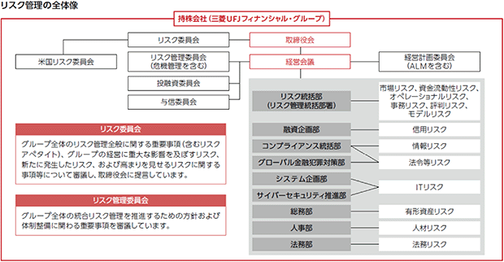
［リスクアペタイト・フレームワーク］
「リスクアペタイト・フレームワーク」とは、当社グループの事業戦略・財務計画を達成するための「リスクアペタイト」(進んで引き受けようとするリスクの種類と量)を明確化し、経営管理やリスク管理を行う枠組みです。「リスクアペタイト・フレームワーク」の導入によって、経営計画の透明性が向上し、より多くの収益機会を追求できると同時に、リスクをコントロールした経営が可能となります。
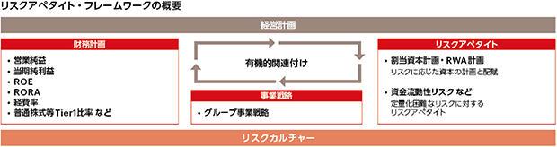
［リスクアペタイト・フレームワークの運営プロセス］
当社グループでは、事業戦略・財務計画を策定・実施するにあたり、必要なリスクアペタイトを適正に設定するとともに、リスク量のモニタリング・分析を行っています。リスクアペタイトの設定・管理プロセスは、以下のとおりです。リスクアペタイト・フレームワーク運営の実効性確保のために、経営計画策定プロセスの各段階で、割当資本制度、ストレステスト、トップリスク管理などのリスク評価・検証手法を活用します。さらに、計画策定後も、設定されたリスクアペタイトのモニタリングを通じ、有事に迅速なアクションを取ることが可能な態勢を整えています。
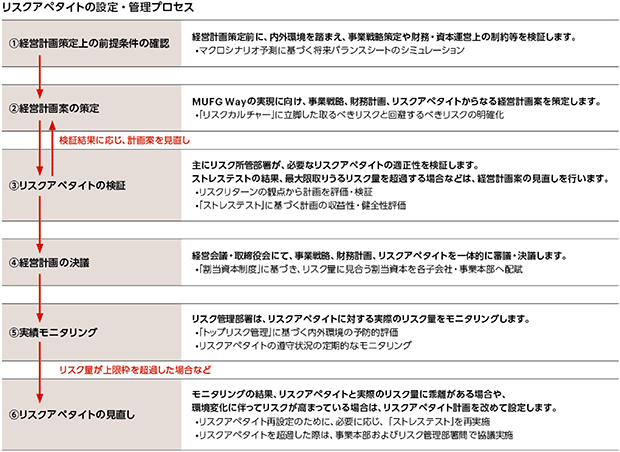
［統合的リスク管理の手法］
当社グループでは、業務遂行から生じるさまざまなリスクを可能な限り統一的な尺度で総合的に把握・認識し、経営の安全性を確保しつつ、株主価値の極大化を追求するために、統合的リスク管理・運営を行っています。統合的リスク管理とは、リスクに見合った収益の安定的計上、資源の適正配分などを実現するための能動的なリスク管理を推進することです。統合的リスク管理の主要な手法として、(1)割当資本制度、(2)ストレステスト、(3)トップリスク管理を採用しています。これらの手法のうち、サステナビリティ関連のリスクに対しては、トップリスク管理を用いています。
［トップリスク管理］
各種のリスクシナリオが顕在化した結果当社グループにもたらされる損失の内容をリスク事象と定め、その影響度と蓋然性に基づき、重要度を判定します。その上で、今後約1年間で最も注意すべきリスク事象をトップリスクとして特定し、トップリスクを網羅的に把握したリスクマップを作成することによって、フォワードルッキングなリスク管理に活用しています。
当社及び主要子会社においては、経営層を交えてトップリスクに関し議論することで、リスク認識を共有した上で実効的対策を講じています。
ⅱ．サステナビリティ関連の機会の識別等及びモニタリングを行うためのプロセス
サステナビリティに関する課題は、取締役会の監督のもと、経営会議がその傘下に様々な委員会を設置して管理しています。サステナビリティ委員会は、経営会議傘下の委員会で、グループＣＳｕＯが委員長を務めています。サステナビリティ委員会ではサステナビリティに関するリスクや機会を含めたサステナビリティに関する課題への取り組み方針を定期的に審議するとともに、当社グループの取り組みの進捗状況をモニタリングしています。サステナビリティ委員会は、経営会議へ報告を行い、必要に応じて取締役会へも報告を行っています。
なお、上記プロセスは前報告年度と比較して、重要な変更はありません。
④ 指標及び目標
サステナビリティ関連のリスク及び機会毎に指標や目標を設定しています。詳細は各リスク及び機会における指標及び目標をご参照ください。
(3) 気候
① ガバナンス
全体的なガバナンスについては「(2) サステナビリティ全般 ① ガバナンス」をご参照ください。
ⅰ．ガバナンス機関
［情報の入手方法及び頻度］
気候関連の課題は、取締役会の監督のもと、経営会議がその傘下にサステナビリティ委員会を設置して管理しています。サステナビリティ委員会では気候関連のリスク及び機会を含めた気候関連の課題への取り組み方針を定期的に審議するとともに、当社グループの取り組みの進捗状況をモニタリングしています。サステナビリティ委員会は、経営会議へ報告を行い、必要に応じて取締役会へも報告を行っています。
［スキル及びコンピテンシー］
「(2) サステナビリティ全般 ① ガバナンス」をご参照ください。
［どのように考慮しているか］
当社グループでは、気候変動に関するリスクをトップリスクと位置づけており、経営会議傘下の委員会である投融資委員会、与信委員会、リスク管理委員会において、それぞれの専門性を踏まえた検討を行っています。これらの各委員会の審議内容は、経営会議へ報告しています。また、取締役会傘下委員会であるリスク委員会においても気候変動を含むグループ全体のリスク管理に関する事項及びトップリスクに関する事項について審議・報告を行っています。
［リスクと機会に関連する目標の設定及び進捗のモニタリング］
「(2) サステナビリティ全般 ① ガバナンス」をご参照ください。
［目標に関連するパフォーマンス指標の報酬制度への反映］
報酬制度の詳細については、「
気候変動については、グループ・グローバルＧＨＧ自社排出量の削減などが反映されています。
ⅱ．経営者の役割
経営会議傘下のサステナビリティ委員会を中心に、環境・社会課題に係る幅広いテーマのリスクと機会について議論しています。気候変動対応については、カーボンニュートラル推進プロジェクトチームを立ち上げ、ステアリングコミッティや移行計画モニタリング会議などを開催し、戦略や方針について議論の上、迅速に意思決定を行っています。また、各取り組みは取締役会をはじめとした監督機関でも審議・報告がなされます。
② 戦略
ⅰ．気候関連のリスク及び機会の識別、ビジネス・モデル及びバリュー・チェーンに与える影響
(気候関連リスク)
当社グループでは、企業の見通しに影響を与えると合理的に見込み得る気候関連のリスク(以下、「合理的に見込み得る気候関連リスク」)について、下表の４つを特定しています。特定するためのプロセスにつきましては、③ リスク管理の「ⅰ．気候関連のリスクの識別、評価、優先順位付けを行うためのプロセス及び関連する方針」をご参照ください。
また、特定された合理的に見込み得る気候関連リスク及びビジネス・モデル(含む投融資先のセクター)やバリュー・チェーンに与える影響、リスクが集中している領域は以下のとおりです。
合理的に見込み得る気候関連リスク
(気候関連機会)
当社グループでは、企業の見通しに影響を与えると合理的に見込み得る気候関連の機会(以下、「合理的に見込み得る気候関連機会」)について、「ファイナンスを含む気候関連ビジネス」を識別しています。識別するためのプロセスにつきましては、③ リスク管理の「ⅲ．気候関連の機会の識別等及びモニタリングを行うためのプロセス、全体的なリスク管理プロセスとの関連」をご参照ください。
また、識別された合理的に見込み得る気候関連機会及びビジネス・モデルやバリュー・チェーンに与える影響、機会が集中している部分は以下のとおりです。
合理的に見込み得る気候関連機会
(気候関連のリスク及び機会)
気候関連開示を作成するにあたり、産業横断的指標等や、「IFRS S2号の適用に関する産業別ガイダンス」(以下、「産業別ガイダンス」という。)に定義されている開示トピックに関連する産業別の指標を参照し、その適用可能性を考慮しました。
ファイナンス支援は、当社グループにとって機会であると同時に、お客さまのＧＨＧ排出削減を通じて当社グループのファイナンスド・エミッションの減少にも資するものですが、排出削減には時間を要する一方、ファイナンス支援自体は、与信増加を通じて当社グループの信用リスクを増加させるため、トレードオフの関係にあります。また、サステナブルファイナンスの推進において、サステナビリティへの貢献を謳った商品・サービスの表示や説明が事実と異なる場合等においては、不適切な開示とみなされ、グリーンファイナンス等に係る気候関連規制に抵触し、罰金或いは訴訟等につながる可能性があり、オペレーショナル(法令等)リスク(移行リスク)とも関連しています。
ⅱ．財務的影響
［当報告期間・翌年次報告期間］
(気候関連リスク)
特定された合理的に見込み得る気候関連リスクが、当報告期間において当社グループの財政状態、財務業績及びキャッシュ・フローに与えた重要な影響は識別されておりません。また翌年次報告期間において、関連する財務諸表に計上する資産及び負債の帳簿価額に重要性がある影響を与える重大なリスクは識別されておりません。
(気候関連機会)
当報告期間においてそれぞれの合理的に見込み得る気候関連機会が与える財務的影響(企業の財政状態、財務業績及びキャッシュ・フローに与えた影響)は、気候変動のみによる影響額を区分して識別できないため、財務的影響に関する定量的情報は開示していません。翌年次報告期間についても同様です。
なお、サステナブルファイナンスの実行額については、④ 指標及び目標の「ⅳ．気候関連の機会に関する開示」をご参照ください。
機会に関連する財務的影響が含まれる可能性がある主な財務諸表の項目は以下のとおりです。
連結損益計算書
以下の表示科目は経常収益、経常利益、税金等調整前当期純利益、当期純利益に影響を与えます。
連結貸借対照表
以下の表示科目は、総資産に影響を与えます。
連結キャッシュ・フロー計算書
以下の表示科目は営業活動によるキャッシュ・フローに影響を与えます。
［短期、中期及び長期において予想される財務的影響]
(気候関連リスク)
● 信用リスク(移行リスク)
信用リスク(移行リスク)の将来の財務的影響は、気候変動関連の法規制・政策展開や顧客の選好、低炭素技術の発展動向や競争力の推移などの前提について、現時点においては不確実性が高く、有用な定量的情報を開示することはできないと考えています。
想定される財務的影響は、長期的にはネットゼロ社会の実現に向けた世界的な政治・経済の変化を受けて、一定の財務的影響(与信費用)が生じ得ると考え、「② 戦略 ⅲ．戦略及び意思決定に与える影響」にて後述するリスク対応戦略を実施・計画しています。
なお、他の気候関連のリスク又は機会及びその他の要因との複合的な財務的影響に関する重要な定量的情報はありません。
● 信用リスク(物理的リスク)
信用リスク(物理的リスク)の将来の財務的影響は、今後の地球環境の変化の予測や、気候変動関連の災害の頻度や規模の予測について、現時点においては不確実性が高く、有用な定量的情報を開示することはできないと考えています。
想定される財務的影響は、長期的には気候変動に起因する自然災害の頻発化・激甚化も懸念されるため、一定の財務的影響(与信費用)が生じ得ると考え、「② 戦略 ⅲ．戦略及び意思決定に与える影響」にて後述するリスク対応戦略を実施・計画しています。
なお、他の気候関連のリスク又は機会及びその他の要因との複合的な財務的影響に関する重要な定量的情報はありません。
● オペレーショナル(法令等)リスク(移行リスク)
オペレーショナル(法令等)リスク(移行リスク)の将来の財務的影響は、サステナビリティ関連法規制や各国政府・イニシアティブ等の国際的な動向等につき将来の不確実性が高く、有用な定量的情報を開示することはできないと考えています。
想定される財務的影響は、上記の罰金或いは訴訟を受けるリスクが生じた場合、一定の財務的影響(損失の発生や利益の減少等)が生じ得ると考え、「② 戦略 ⅲ．戦略及び意思決定に与える影響」にて後述するリスク対応戦略を実施・計画しています。
なお、他の気候関連のリスク又は機会及びその他の要因との複合的な財務的影響に関する重要な定量的情報はありません。
● 評判リスク(移行リスク)
評判リスク(移行リスク)の将来の財務的影響は、定量的に財務的影響を区分して識別する具体的手段や算定手法が確立していないことに加え、気候変動関連の法規制や政策の将来動向、評判リスクの将来動向は不確実性が高く、有用な定量的情報を開示することはできないと考えています。
想定される財務的影響は、気候変動に関連して評判の悪化が発生した場合、一定の財務的影響(損失の発生や利益の減少等)が生じ得ると考え、「② 戦略 ⅲ．戦略及び意思決定に与える影響」にて後述するリスク対応戦略を実施・計画しています。
なお、他の気候関連のリスク又は機会及びその他の要因との複合的な財務的影響に関する重要な定量的情報はありません。
(気候関連機会)
中長期的には、各業界におけるＧＨＧ排出量実質ゼロに向けた取り組みの推進により、設備投資需要が拡大することが見込まれ、投資計画を下支えするためのグリーンボンド・グリーンローンに加え、産業界のトランジション・イノベーションへの支援も、金融機関にとって大きなビジネスチャンスになっていくと考えており、対応する戦略を策定しています。
ファイナンスを含む気候関連ビジネスに関し、サステナブルファイナンス実行額の目標を設定、ＧＸ起点でのバリュー・チェーン支援を主要戦略として掲げていますが、気候変動関連の法規制・政策展開や顧客の選好、低炭素技術の発展動向や競争力の推移などの前提について、現時点においては不確実性が高く、その将来(短期、中期、長期)において合理的に見込み得る気候関連の機会が与えると想定される財務的影響を合理的に見積もることができないため、有用な定量的情報を開示できないと考えています。
なお、他の気候関連のリスク又は機会及びその他の要因との複合的な財務的影響に関する重要な定量的情報はありません。
ⅲ．戦略及び意思決定に与える影響
［戦略及び意思決定における気候関連リスク及び機会への対応、今後の対応計画］
当社グループは、2021年5月に「カーボンニュートラル宣言」を公表し、2030年までの当社自らのＧＨＧ排出量ネットゼロ、2050年までの投融資ポートフォリオのＧＨＧ排出量ネットゼロを掲げています。1) 2050年カーボンニュートラル実現などを通じてパリ協定1.5℃目標達成に貢献すること、2) 事業を通じて脱炭素社会へのスムーズな移行を支援すること、3) 環境と経済の好循環による持続可能な社会の実現に積極的に貢献することは、今も変わらない3つのコミットメントであり、4つの戦略からなる移行計画を推進しています。
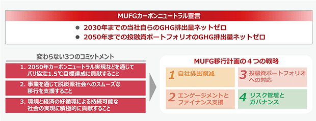
(気候関連リスク)
● 信用リスクへの対応戦略
当社グループでは、気候関連リスクを主要なリスク・カテゴリーに影響を与えるリスクドライバーと位置づけ、様々な波及経路を通じ信用リスクにも影響を及ぼすと考えています。当社グループでは合理的に見込み得るリスクと判断した気候関連の信用リスク(移行リスク・物理的リスク)への対応として、気候変動リスク管理枠組みのもとで与信ポートフォリオ全体・セクター・顧客・案件レベルでのリスク管理を行っており、継続的に見直しをしていきます。
リスク管理の枠組み 1. シナリオ分析(移行リスク・物理的リスク)
当社グループは、与信ポートフォリオ全体のリスクを認識することを目的としてシナリオ分析を実施しました。移行リスクは2050年まで、物理的リスクは2100年までを対象とした分析を実施しています。シナリオ分析の実施に際しては、外部専門家による検証結果も反映しています。また、規制当局とも対話をしつつ、分析手法の高度化に向けた検討を継続的に実施しています。
リスク管理の枠組み 2. セクターヒートマップ(移行リスク・物理的リスク)
当社グループは、セクター別の移行リスクと物理的リスクをヒートマップで整理しています。気候変動に関連する政策や技術、市場などの環境変化や、最新の気候科学の発展に合わせてセクター評価を継続的に見直し、高度化につなげていきます。
リスク管理の枠組み 3. トランジション評価フレームワーク(移行リスク)
当社グループは、高排出セクターのお客さまの移行状況を、1.5℃整合の中間目標や移行計画、気候関連のガバナンス体制、排出削減実績などにより確認しています。これに、エンゲージメント活動を通じて得た情報も反映し、お客さまの移行状況を6分類で評価しています。
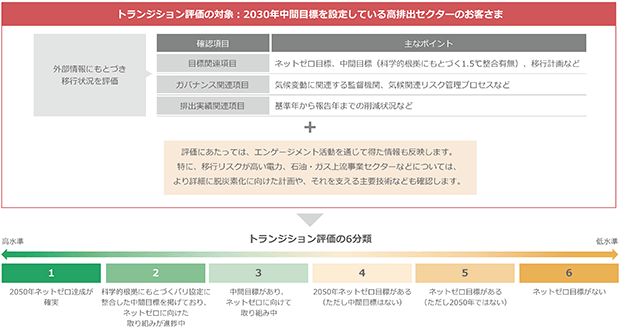
リスク管理の枠組み 4. ＭＵＦＧ環境・社会ポリシーフレームワーク(移行リスク)
個別案件の検討時には「ＭＵＦＧ環境・社会ポリシーフレームワーク」や「赤道原則」を適用し、お客さまの環境・社会配慮の実施状況を確認しています。
● オペレーショナル(法令等)リスク(移行リスク)への対応戦略
当社グループでは、合理的に見込み得るリスクと判断した気候関連のオペレーショナル(法令等)リスク(移行リスク)への対応として、全社的なコンプライアンス管理態勢の中で、サステナビリティ関連法規制の動向をモニタリングしています。また、新商品のリリースにあたっては幅広い観点からリスクの把握と評価を事前に実施しています。現時点においては、気候関連のオペレーショナル(法令等)リスクは潜在的な影響に留まっているため、当面の間は当該モニタリングを継続し、国際的動向等を見定めながら、必要に応じて更なる対応を検討していく方針です。
● 評判リスク(移行リスク)への対応戦略
当社グループでは、合理的に見込み得るリスクと判断した気候変動に係る評判リスクに対応するため、ＭＵＦＧ環境・社会ポリシーフレームワークの運営状況、気候関連目標の達成に向けた進捗状況、気候関連訴訟の発生状況に対するモニタリングを行っています。現時点においては、評判リスクは潜在的な影響に留まっているため、当面の間は当該モニタリングを継続し、国際的動向等を見定めながら、必要に応じて更なる対応を検討していく方針です。
(気候関連の機会)
当社グループは、金融機関のカーボンニュートラルは、金融機関のバランスシートのグリーン化を追求するのではなく、お客さまのカーボンニュートラル実現、すなわち実体経済の脱炭素化を通じて達成されるべきだと考えています。
そのためには、グリーンな産業や資産への投融資に加えて、高排出産業や地域の脱炭素化を着実に支援することが最も重要です。また、トランジションは産業の大変革を意味しており、多額の資金動員とリスクテイクが必要となるため、民間だけでなく公的機関と連携したファイナンスを進めることも重要です。
実体経済の脱炭素化は、地理的な特性、産業構造及び産業間の相互依存関係、エネルギー構成の違いなどにより、時間軸や道筋が地域によって異なります。幅広いステークホルダーの理解を得ながらトランジションを進めていくことで、アジア・日本を代表する金融機関としての責任を果たしていきたいと考えています。
当社グループは、カーボンニュートラル実現に向けた移行計画の戦略の一つとして、エンゲージメントとファイナンス支援を掲げています。また、産業界・政府機関と連携した提言活動を行うとともに、政府の政策や戦略に沿ったお客様の取組みを支えるソリューションの提供を通じて、脱炭素に向けた新たなニーズや課題を把握していきます。そして、お客さまや自治体、さらには業界全体とのリレーションも強化しながら、新たなニーズや課題を産業界・政府機関にフィードバックし、お客さまの脱炭素化に向けて責任ある伴走をしていきます。
気候関連の目標としては、サステナブルファイナンスの2019年度から2030年度までの累計実行額を目標として設定しています。再生可能エネルギー関連ビジネスやトランジション支援のさらなる推進に取り組み、達成を目指します。
サステナブルファイナンス目標については、「④ 指標及び目標」をご参照ください。
［資源を確保している方法及び将来において資源を確保するための計画の内容］
当社グループでは、2050年カーボンニュートラル実現に向けて、社員のケイパビリティ・ビルディングにも力を入れています。全社員向けの啓発に加え、ナレッジ蓄積やエンゲージメント力強化など、社員の職務に応じた施策を展開しています。今後もリスク分析や社員のスキルを強化しながら、当社グループ全体のケイパビリティを向上していきます。
［過去の報告期間に開示した計画に対する進捗］
サステナブルファイナンスの累計実行額は、「④ 指標及び目標」をご参照ください。
［気候関連のリスク及び機会の間のトレードオフ］
当社グループは、リスク管理を強化しリスクを低減することに伴い、ファイナンス提供機会の減少等のビジネス機会の逸失というトレードオフ関係が成立する場合があることを認識しています。リスクへの対応戦略の検討にあたっては、こうしたビジネス機会とのトレードオフ関係を考慮し、具体的な取り組みを検討しています。
［移行計画］
当社グループでは、ＧＦＡＮＺ(Glasgow Financial Alliance for Net Zero)の定めるガイダンスのフレームワークに従い、移行計画を策定しています。移行計画は、①自社排出削減、②エンゲージメントとファイナンス支援、③投融資ポートフォリオへの対応、④リスク管理とガバナンス、の４つの戦略で構成します。グローバルに金融サービスを展開する当社グループは、移行計画を進める過程で、予見が難しいさまざまな外的要因の影響を受けます。詳細は、当社ホームページに掲載している
ⅳ．気候レジリエンス
気候関連のリスク及び機会を考慮した企業の戦略及びビジネス・モデルの気候レジリエンスは以下のとおりです。
なお、合理的に見込み得る気候関連リスク毎に記載しています。
［気候関連のシナリオ分析］
● 信用リスク(移行リスク)に係るシナリオ分析
信用リスク(移行リスク)についてのシナリオ分析の手法、実施時期、及び分析結果は以下のとおりです。
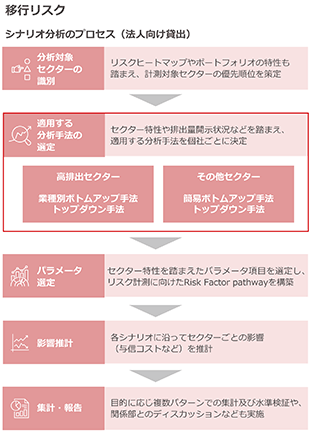
実施したシナリオの手法、実施時期、及び分析結果
● 信用リスク(物理的リスク)に係るシナリオ分析
信用リスク(物理的リスク)についてのシナリオ分析の手法、実施時期、及び分析結果は以下のとおりです。
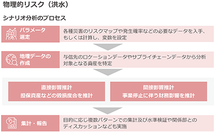
実施したシナリオの手法、実施時期、及び分析結果
● オペレーショナル(法令等)リスク(移行リスク)に係るシナリオ分析
オペレーショナル(法令等)リスクについてのシナリオ分析の手法、実施時期、及び分析結果は以下のとおりです。
シナリオ分析のプロセス
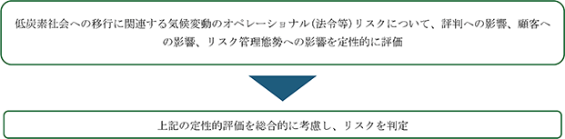
実施したシナリオの手法、実施時期、及び分析結果
● 評判リスク(移行リスク)に係るシナリオ分析
評判リスク(移行リスク)についてのシナリオ分析の手法、実施時期、及び分析結果は以下のとおりです。
シナリオ分析のプロセス
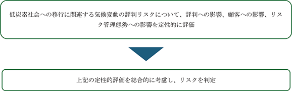
実施したシナリオの手法、実施時期、及び分析結果
［気候レジリエンスの評価］
シナリオ分析の結果が戦略やビジネス・モデルの評価に及ぼす影響及び対応の必要性
気候関連リスク(信用リスク、オペレーショナル(法令等)リスク、評判リスク)に係るシナリオ分析の結果は上述のとおりです。
但し、当該影響は不確実性を含む諸前提に基づいた試算結果であり、当社グループの事業活動に対し直ちに重大な影響を与えるものではないと考えています。
一方で、適切な気候変動対応戦略の推進やリスク管理を行う必要があると考えており、上述の気候変動対応戦略を推進しており、また、リスク管理に努めていきます。
気候関連の信用リスク(移行リスク、物理的リスク)への対応戦略としては気候変動リスク管理枠組みのもとで与信ポートフォリオ全体・セクター・顧客・案件レベルでのリスク管理を行っており、継続的に見直しをしていきます。
気候関連のオペレーショナル(法令等)リスク(移行リスク)への対応戦略としては、サステナビリティ関連法規制や各国政府・イニシアティブ等の国際的な動向等のモニタリングに取り組んでいきます。
気候関連の評判リスク(移行リスク)への対応戦略としては、環境・社会ポリシーフレームワークの運営状況、気候関連目標の達成に向けた進捗状況、気候関連訴訟の発生状況に対するモニタリングに取り組んでいきます。
ファイナンスを含む気候関連ビジネスによる機会への対応戦略としては、脱炭素化支援アプローチに沿ったエンゲージメント推進、ファイナンス支援に取り組んでいきます。
評価において考慮された不確実性の領域
シナリオ分析では、前述のとおり、炭素価格の上昇、マクロ経済のトレンド、エネルギー構成、低炭素技術の動向、国連・イニシアティブの国際的動向、気候関連訴訟の動向等、多くの想定に基づいています。これらの想定は一般的に用いられているものではありますが、不確実性を含むものであり、当社グループでも当該想定の実際の動向について、引き続きモニタリングに努めていきます。
戦略やビジネス・モデルを調整する企業の能力 (① 金融資源の利用可能性及び柔軟性、② 既存資産の再配置、再利用、性能向上又は廃棄する企業の能力、③ レジリエンス強化のための現在の投資／投資計画)
当社グループは、① 1.5℃目標達成への貢献、② 脱炭素社会へのスムーズな移行の支援、③ 環境と経済の好循環による持続可能な社会の実現という3つの変わらないコミットメントのもとで、取り組みを進めてきました。
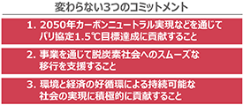
また、当社グループはカーボンニュートラル宣言を公表しており、カーボンニュートラル実現に向けた戦略は、① 自社排出削減、② エンゲージメントとファイナンス支援、③ 投融資ポートフォリオへの対応、④ リスク管理とガバナンスの4つです。この戦略は当社グループの移行計画の中核となるもので、これらを通じて2050年カーボンニュートラルの実現をめざしています。
こうした戦略を推進するため、当社グループでは気候変動を含む環境・社会課題に係る機会及びリスクへの対応方針・取り組み状況を経営会議傘下のサステナビリティ委員会で定期的に審議しており、また、グループ・グローバルベースのプロジェクトチームを立ち上げ、グループＣＥＯをはじめとする主要マネジメントが参加するステアリングコミッティや検討会などを通じて、戦略や方針について議論し、迅速に意思決定を行える態勢を整えています。
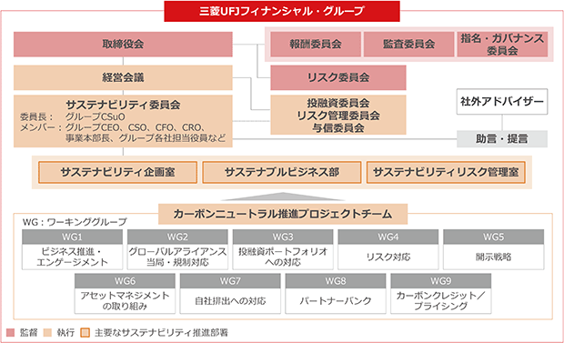
当社グループではこのように気候変動対応に向けた戦略推進・リスク管理について取り組んでおり、戦略やビジネス・モデルを調整する企業の能力(金融資源の活用、人的資源の投入、投資等)を備えています。
③ リスク管理
全体的なリスク管理については「(2) サステナビリティ全般」及び「
ⅰ．気候関連のリスクの識別、評価、優先順位付けを行うためのプロセス及び関連する方針
当社グループでは、企業の見通しに影響を与えると合理的に見込み得る気候関連リスクの特定(識別・評価・優先順位付け)にあたり、以下のプロセスで実施しています。
1. 「産業別ガイダンス」の開示トピックを踏まえた、気候関連リスクの洗い出し
当社グループではビジネス・バリュー・チェーンを勘案の上、商業銀行、資産運用及び管理業務、投資銀行及び仲介、を主たる事業として、それぞれの「産業別ガイダンス」を考慮し、また、産業横断的指標を考慮の上、当社グループに影響を与える気候関連リスク(移行リスク(政策と法／テクノロジー／市場)や物理的リスク(急性／慢性))と関連性のあるリスクを洗い出しています。その上で、下記のとおりこれらのリスクが波及経路を通じ当社グループの主要なリスク・カテゴリーにどのように影響を及ぼすか、把握しています。
(波及経路の図)
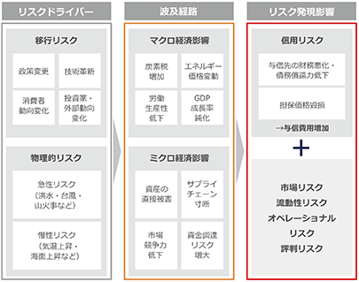
2. 網羅的に洗い出したリスクにつき、各リスクの ①影響度 及び ②分析能力 を踏まえてシナリオ分析の対象とするリスクを選定
当社グループでは、これらのリスクからシナリオ分析対象を選定するに当たり、影響度(定量面と定性面の両方を考慮)とシナリオ分析能力を評価項目としています。
3. 選定したリスクにつき、シナリオ分析を実施
当社グループでは、上述のリスクについて定量又は定性のシナリオ分析を実施し、想定される気候変動シナリオ下における影響度を評価しています。
なお、企業の見通しに影響を与えると合理的に見込み得る気候関連リスクの詳細なシナリオ分析内容については、② 戦略の「ⅳ．気候レジリエンス」に記載した内容をご参照ください。
4. シナリオ分析結果を踏まえ、各リスクの規模、発生可能性、性質を評価し、企業の見通しに影響を与えると合理的に見込み得る気候関連リスクを特定
当社グループでは、シナリオ分析結果を踏まえ、リスクの規模(定量面、定性面のリスクの影響度を加味)、発生可能性、性質を評価し、以下のとおり企業の見通しに影響を与えると合理的に見込み得る気候関連リスクの最終判定を実施しました。
(特定したリスクについては、「② 戦略」をご参照ください。)
ⅱ．気候関連のリスクのモニタリングを行うプロセス、及び全体的なリスク管理プロセスとの関連性
当社グループでは、上述のとおり、企業の見通しに影響を与えると合理的に見込み得る気候関連リスクのそれぞれについて、既存の統合的リスク管理のフレームワークのリスク・カテゴリーに紐づけ、当該リスク・カテゴリーの下で以下のようにモニタリング・管理しています。
● 信用リスク(移行リスク、物理的リスク)の管理・モニタリング
当社グループでは、気候変動に係る信用リスクを軽減するため、既存の信用リスク管理態勢を活用する形で整備し運用しています。
② 戦略の「ⅲ．戦略及び意思決定に与える影響」に記載のとおり、移行リスク・物理的リスクに対するシナリオ分析や、移行リスク・物理的リスクをセクター毎に評価したセクターヒートマップの作成を行っています。また、移行リスクの適切なリスク管理を企図し、トランジション評価フレームワークの運営や、個別案件の検討時にはＭＵＦＧ環境・社会ポリシーフレームワーク及び赤道原則を適用するとともに、案件検討プロセスを運用しています。併せて気候関連の信用リスクに係る当期財務影響額に関する情報収集・確認・集計プロセスを整備しています。
● オペレーショナルリスク(法令等)リスク(移行リスク)の管理・モニタリング
当社グループでは、気候変動に係るオペレーショナル(法令等)リスクを軽減するため、リスク管理態勢を整備しています。
全社的なコンプライアンス管理態勢の中で、サステナビリティ関連法規制の動向をモニタリングしています。
また、新商品のリリースにあたっては幅広い観点からリスクの把握と評価を事前に実施しています。
● 評判リスク(移行リスク)の管理・モニタリング
当社グループでは、気候変動に係る評判リスクを軽減するため、リスク管理態勢を整備しています。
ＭＵＦＧ環境・社会ポリシーフレームワークの運営状況、気候関連目標の達成に向けた進捗状況、気候関連訴訟の発生状況に対するモニタリングを行っています。
ⅲ．気候関連の機会の識別等及びモニタリングを行うためのプロセス、全体的なリスク管理プロセスとの関連
当社グループでは、企業の見通しに影響を与えると合理的に見込み得る気候関連の機会として、「ファイナンスを含む気候関連ビジネス」を識別しています。識別するにあたり、「産業別ガイダンス」(商業銀行／資産運用及び管理業務／投資銀行及び仲介)に定義されている開示トピックを参照し、その適用可能性を考慮するとともに、主要戦略を踏まえて決定しました。
サステナビリティ委員会において、サステナブルファイナンスの進捗状況等、サステナビリティへの取り組みに関する審議・報告がなされ、その評価・優先順位付け・モニタリングが行われます。その審議内容は、経営会議、取締役会へ報告されます。なお、識別にあたってシナリオ分析は用いていません。また、サステナブルファイナンスに伴う信用リスク等のリスク管理は、全社的なリスク管理プロセスと統合されています。
④ 指標及び目標
当社グループでは、以下のとおり気候変動関連の指標及び目標を開示しています。その概要は以下のとおりです。
(気候関連の指標)
1. 産業横断的指標
2. 産業別指標
当社グループでは、主たる事業との関連性から、勘案すべき産業別の指標を商業銀行、資産運用及び管理業務、投資銀行及び仲介とし、「産業別ガイダンス」を参照しています。
商業銀行のトピック「信用分析における環境、社会及びガバナンス要因の組込み」における該当指標、資産運用及び管理業務のトピック「投資管理及びアドバイザリー業務における環境、社会及びガバナンス要因の組込み」における該当指標、投資銀行及び仲介のトピック「投資銀行及び仲介活動における環境、社会及びガバナンス要因の組込み」における該当指標については、当社グループの「企業の見通しに影響を与えると合理的に見込み得る気候関連のリスク及び機会」を説明するために当社グループが用いている指標と異なるため、これらの指標を適用していません。
ⅰ．温室効果ガス排出
温室効果ガス排出の測定方法等に関する開示
当社グループ全体のスコープ1温室効果ガス排出、スコープ2温室効果ガス排出については、サステナビリティ開示テーマ別基準第2号「気候関連開示基準」第49項本文に従い、「温室効果ガスプロトコルの企業算定及び報告基準(2004年)」(以下「ＧＨＧプロトコル(2004年)」という。)に従って測定しています。
当社グループ全体のスコープ3温室効果ガス排出(カテゴリー15)については、「ＧＨＧプロトコル(2004年)」、「温室効果ガスプロトコルのコーポレート・バリュー・チェーン(スコープ3)基準(2011年)」(以下「スコープ3基準(2011年)」という。)に従って、また、「金融機関向け炭素会計パートナーシップ(ＰＣＡＦ)」が開発した「2022年12月公表のＰＣＡＦ(Partnership for Carbon Accounting Financials)スタンダード Part A」(以下「ＰＣＡＦ」という)を踏まえて測定しています。
(温室効果ガス排出の測定アプローチ)
当社グループは、「ＧＨＧプロトコル(2004年)」「スコープ3基準(2011年)」及び「ＰＣＡＦ」に基づき温室効果ガス排出を測定するにあたり、自社が運営している施設からの排出について報告責任を果たすため、また、自社の連結範囲のエンティティの投融資による排出量について報告責任を果たすため、測定アプローチとして経営支配力アプローチを用いています。
(温室効果ガス排出の測定方法)
当社グループは、次の方法により温室効果ガス排出を測定しています。
(a) スコープ1温室効果ガス排出
当社グループにおけるスコープ1温室効果ガス排出の発生要因は、主にオフィスでの都市ガスや重油の利用、社用車でのガソリン・軽油の利用、及び空調機器等の利用に伴うフロン類の漏えいです。
フロン類については直接測定ができるため、フロン排出抑制法に基づき、冷媒充填回収証明書から漏洩量を算定し、冷媒毎のＧＷＰ(地球温暖化係数)を乗じることで、直接測定の方法によりスコープ1温室効果ガス排出を測定しています。
都市ガス、重油、ガソリン及び軽油については、直接測定ができないため、「ＧＨＧプロトコル(2004年)」に基づき、当連結会計年度におけるそれらの使用量を活動量として、排出係数を乗じ、見積りの方法によりスコープ1温室効果ガス排出を測定しています。
なお、活動量については、原則第1四半期～第3四半期は確定値、第4四半期は物件の増減等を考慮の上、前年同月値で代替した見積りを採用しています。
排出係数については、当社グループ国内拠点では、報告期間末日において入手可能な環境大臣及び経済産業大臣が公表する「算定・報告・公表制度における算定方法・排出係数一覧」における排出係数を適用します。また、当社グループ海外拠点では、「ＧＨＧプロトコル(2004年)」が参照する排出係数を適用しています。
(b) スコープ2温室効果ガス排出
当社グループにおけるスコープ2温室効果ガス排出の発生要因は、主に電力と熱エネルギー(蒸気・温水・冷水)の使用です。温室効果ガス排出の測定にあたり、電力と熱エネルギーは直接測定ができないため、「ＧＨＧプロトコル(2004年)」に基づき、当連結会計年度における電力と熱エネルギー(蒸気・温水・冷水)の使用量を活動量として、排出係数を乗じ、見積りの方法によりスコープ2温室効果ガス排出を測定しています。
なお、ロケーション基準・マーケット基準いずれにおいても活動量は原則第1四半期～第3四半期は確定値、第4四半期は物件の増減等を考慮の上、前年同月値で代替した見積りを採用し、排出係数は報告期間の末日において利用可能な係数を使用しています。
・ ロケーション基準
排出係数について、当社グループ国内拠点では、当報告期間末日において入手可能な環境大臣及び経済産業大臣が公表する「電気事業者別排出係数」における全国平均係数を適用します。
また、当社グループ海外拠点では、「ＧＨＧプロトコル(2004年)」が参照する排出係数を適用しています。
・ マーケット基準
排出係数については、当社グループ国内拠点では、当報告期間末日において入手可能な環境大臣及び経済産業大臣が公表する「電気事業者別排出係数」における事業者別排出係数を適用しています。
また、当社グループ海外拠点は、「ＧＨＧプロトコル(2004年)」に基づき、原則として当連結会計年度の電力契約ごとの排出係数を適用し、電力契約ごとの排出係数を把握できない場合は、「ＧＨＧプロトコル(2004年)」が参照する排出係数を適用しています。
(c) スコープ3温室効果ガス排出
当社グループは、スコープ3温室効果ガス排出について、「スコープ3基準(2011年)」に定めるスコープ3カテゴリーのうち、重要性を踏まえてカテゴリー15(ファイナンスド・エミッション)を測定しています。
カテゴリー15(ファイナンスド・エミッション)の測定に際しては、直接測定ができないため、主として1次データである投融資先が開示する排出量(開示がない場合は「ＰＣＡＦ」に従い、推定値)を用いて見積もりによる温室効果ガス排出量を測定しています。
当社グループは、後述の測定の不確実性に記載の前提事実及び仮定並びに推論過程でカテゴリー15(ファイナンスド・エミッション)を測定しています。また、ファイナンスド・エミッション測定の適切性を検討し、評価するために、情報ベンダーから入手した情報の信頼性等を検証する手続を行い、その結果を経営会議へ報告しています。なお、ファイナンスド・エミッションは見積り情報(不確実性のある数値)であり、事後的に異なるものとなる可能性があります。
カテゴリー15(ファイナンスド・エミッション)については「ＧＨＧプロトコル(2004年)」「スコープ3基準(2011年)」に従い、また、「ＰＣＡＦ」を踏まえて、次の方法に基づき測定しています。
(測定の不確実性)
本サステナビリティ関連財務開示で報告される数値に影響を与える最も重大な不確実性は、次のとおりです。
・ 投融資先の報告・開示排出量データには、スコープ1温室効果ガス排出、スコープ2温室効果ガス排出及びスコープ3温室効果ガス排出ともに、算出範囲が一部の連結企業や「ＧＨＧプロトコル(2004年)」上の一部のカテゴリーに限られるもの、算出手法の高度化の途上にあるもの等が含まれます。このため、顧客企業の温室効果ガス排出量開示の拡充やデータの精緻化が進むにつれて、ファイナンスド・エミッションの計測結果が増加することがあります。
・ 特に、スコープ3温室効果ガス排出については、企業ごとに開示カテゴリーに差分がある、バリュー・チェーン内で複数の企業の排出が重複する性質である、推計に用いるＰＣＡＦデータベースにスコープ3下流の温室効果ガス排出を推計するためのデータ(排出係数)が含まれていない、といった課題を認識しています。
・ 資本財セクターのスコープ3温室効果ガス排出は、その大部分が重電メーカーのスコープ3温室効果ガス排出であり、重電メーカーの開示に従って、火力発電プラント等、販売した製品の生涯を通じた排出を計上しています。これは年間の排出量ではないため、ファイナンスド・エミッションの規模が極めて大きくなることに加え、受注状況によって年ごとにばらつきがあるという特徴があります。
・ また、温室効果ガス排出量の推計にあたって、IEA World Energy Outlook統計値等に基づく排出係数やＰＣＡＦデータベースの収益額・資産額あたりの排出係数を使用していますが、これらの排出係数もデータの精緻化等による更新がされる過程で変更になる可能性があり、この点においても、計測結果は今後大きく変化する可能性があります。
・ 「ＰＣＡＦ」のメソドロジーの変更・高度化や、計測・目標設定上の実務的な基準(各種定義・計測範囲・時点等)の明確化等により、将来的に計測方法を変更する可能性があります。その場合には、変更点を明らかにした上で計測結果を開示していきます。
(温室効果ガス排出の算定期間)
当社グループは、当連結会計年度(2025年4月1日から2026年3月31日まで)を算定期間として温室効果ガス排出を測定しています(当社グループ子会社の会計期間が12月期の場合は、2025年1月1日から2025年12月31日を算定期間としています)。
当社グループは、スコープ3カテゴリー15については、原則、連結会計年度の1年前のエクスポージャーをもとに算定を行っています。バリュー・チェーン上の企業の温室効果ガス排出の情報を入手するにあたり主として情報ベンダーを使用していますが、当該情報については、当社グループの連結会計年度とは異なる算定期間を対象としています。
当該情報は、サステナビリティ開示テーマ別基準第2号「気候関連開示基準」第64項に定める要件をすべて満たしていることから、当社グループは、温室効果ガス排出に関する情報を作成するにあたり、当該情報を用いています。
温室効果ガス排出に関する開示
当社グループの当連結会計年度の温室効果ガス排出量は以下のとおりです。
上記温室効果ガス排出量の開示に当たり、スコープ1温室効果ガス排出及びスコープ2温室効果ガス排出は、算定対象となる7種類の温室効果ガスをCO2相当量に集約して開示しています。なお、スコープ1温室効果ガス排出、スコープ2温室効果ガス排出について、その他の投資先に関する温室効果ガス排出は該当ありません。
(スコープ3温室効果ガス排出の内訳に関する情報)
当社グループでは、スコープ3カテゴリー15の温室効果ガス排出の開示において、金融ファシリテーションに係る排出(債券・株式引受、シンジケートローンに起因する排出)を除外しています。
また、ファイナンスド・エミッションに含めた融資及び投資に関連するデリバティブに起因する排出を全て除外しています。除外したデリバティブは、「第５ 経理の状況」において、我が国において一般に公正妥当と認められる企業会計の基準に準拠してデリバティブとして扱っているデリバティブであり、金利関連取引、通貨関連取引、株式関連取引、債券関連取引、商品関連取引、クレジット・デリバティブ取引等を含みます。
この結果、スコープ3カテゴリー15の温室効果ガス排出はファイナンスド・エミッションのみであり、カテゴリー15の合計とファイナンスド・エミッションの小計は一致しています。
［資産運用に関する活動］
当社グループは、「ＰＣＡＦ」を用いて、ファイナンスド・エミッションを測定しています。
当社グループの受託財産事業における運用資産残高の総額は、127.2兆円(資産運用に関する活動を行い、ファイナンスド・エミッション計算の対象となるエンティティである三菱ＵＦＪ信託銀行、三菱ＵＦＪアセットマネジメント、Mitsubishi UFJ Asset Management (UK)、三菱ＵＦＪオルタナティブインベストメンツ、三菱ＵＦＪ不動産投資顧問、 First Sentier Group Limited の運用資産残高の総額(*1))です。
(*1)First Sentier Group Limitedは2025年12月末の残高を使用し、上場株式・社債の投資先の財務データ・温室効果ガス排出量データは2025年12月末を基準日にデータベンダーから情報を取得しています。
(*2)当社グループの受託財産事業における運用資産残高の総額の29%である36.3兆円はファイナンスド・エミッションの計算から除外しています。除外した資産とその運用資産残高については、「対象外資産」の表に記載しています。
資産クラス別の内訳
(*3)上場株式・社債の算出にはS&P Capital IQを使用し、本データベンダーでカバレッジのあるものを算出対象としています。
(*4)ソブリン債の算出には、ＰＣＡＦデータベースを使用し、その主要なデータソースとして主にＵＮＦＣＣＣ(国連気候変動枠組条約)の最新(2021年)の公式データを使用し、それ以外のデータについてはＯＷＩＤ(Our World in Data)の最新(2023年)の推定データを用いて補完しています。また最新のデータがないオーストラリアのスコープ1は、2020年のＵＮＦＣＣＣデータを代替し、レバノンのスコープ1はＯＷＩＤの2022年の推定データを用いて補完しています。また、スコープ2,3はＯＥＣＤデータを使用しており、中東・南米などの一部データが存在しない地域については未算出としています。
ソブリン債のスコープ1における土地利用、土地利用の変化、林業(ＬＵＬＵＣＦ：Land Use, Land-Use Change, and Forestry)を含む排出量は、34,383千t-CO2e。
(*5)ファイナンスド・エミッションのスコープ1が算出できた運用資産を元に算出
対象外資産
［商業銀行に関する活動］
当社グループは、「ＰＣＡＦ」を踏まえて、ファイナンスド・エミッションを算定しています。
当社グループの商業銀行におけるコミットメントの総額は、141.6兆円(実行済：35.7兆円、未実行105.9兆円)です。また、当社グループのファイナンスド・エミッションに関連するグロス・エクスポージャーのうち、未実行のローン・コミットメントの割合は、18%です。
(*) 当社グループのグロス・エクスポージャー(貸倒引当金控除前)の総額の32%は、商業銀行の活動を行っていない関係会社の資産、「ＰＣＡＦ」のメソドロジーが未整備の資産及びコミット性のない当座貸越契約等であり、ファイナンスド・エミッションの算定から除外しています。
資産クラス別の内訳
産業別・資産クラス別の内訳
当社グループでは、ファイナンスド・エミッションの絶対総量及びグロス・エクスポージャーを産業別に分解するにあたり、金融安定理事会の「気候関連財務開示に関するタスクフォース」(以下「ＴＣＦＤ」という。)による提言で用いられた産業分類を用いています。ＴＣＦＤは、下表の18業種を他業種よりも財務的影響を受けやすい非金融業界と説明しており、当社グループでは当該18業種(航空貨物と旅客空輸は合算)に加え、それ以外の業種を「その他」にまとめて開示しています。(プロジェクト・ファイナンス、債券、株式投資、未実行のローン・コミットメントにおいても同様です。)
(※1)航空貨物と旅客空輸の合算
(※1)航空貨物と旅客空輸の合算
(※1)航空貨物と旅客空輸の合算
(※1)航空貨物と旅客空輸の合算
(※1)航空貨物と旅客空輸の合算
ⅱ．気候関連の移行リスクに関する開示
(移行リスク関連指標)
当グループにおける気候関連の移行リスクに対して脆弱な資産として、石炭火力発電関連与信を開示しています。
定義や実績等の詳細については、④ 指標及び目標の「ｘ．その他の気候関連の目標に関する開示」における「石炭火力発電関連与信 プロジェクト・ファイナンス」、「石炭火力発電関連与信 コーポレートファイナンス」に記載しています。
ⅲ．気候関連の物理的リスクに関する開示
(物理的リスク関連指標)
物理的リスクに対し脆弱な資産又は事業活動の規模について定量的に開示可能な指標はありません。気候関連リスク(信用リスク)に係るシナリオ分析の結果は② 戦略の「ⅳ．気候レジリエンス」にて記載のとおりですが、当該影響は不確実性を含む諸前提に基づいた試算結果でありＭＵＦＧの事業活動に対し直ちに重大な影響を与えるものではないと考えています。
ⅳ．気候関連の機会に関する開示
当社グループでは、気候関連の機会と整合した資産又は事業活動の規模に関する情報として、気候関連のファイナンスを含んでいることから、サステナブルファイナンスの実行額を開示しています。
当社グループは、サステナブルファイナンス、及びサステナブルファイナンスのうち環境分野の2019年度から2030年度までの累計実行額について、目標を設定しています。
サステナブルファイナンスの当連結会計年度の実行額及び2019年度から2025年度までの累計実行額は以下のとおりです。
サステナブルファイナンスの当連結会計年度の実行額及び累計実行額
サステナブルファイナンス目標及び指標に関する開示は以下のとおりです。
ⅴ．資本投下に関する開示
気候関連のリスク及び機会に対して投下されたファイナンス又は投資については、「ⅳ．気候関連の機会に関する開示」のサステナブルファイナンスをご参照ください。
ⅵ．内部炭素価格に関する開示
当社グループは、内部炭素価格を重要な意思決定に用いていません。
ⅶ．報酬に関する開示
報酬制度の詳細については、「
気候関連の評価項目は、ＥＳＧ関連の評価項目の一部に含まれていますが、これを区分して識別することができません。
ⅷ．その他の気候関連の指標に関する開示
企業の見通しに影響を与えると合理的に見込み得る気候関連のリスク及び機会のそれぞれについて、識別したリスク及び機会に関連する企業のパフォーマンスを測定、モニタリングするために用いている指標は以下のとおりです。
気候関連の機会である、ファイナンスを含む気候関連ビジネスに関する指標は、「ⅳ．気候関連の機会に関する開示」をご参照ください。
(※1) 当社が作成した指標であり、サステナビリティ開示基準以外の情報源から得た指標を調整したものではありません。
ⅸ．温室効果ガス排出目標に関する開示
自社ＧＨＧ排出量
投融資ポートフォリオＧＨＧ排出量
以降の表において、ＣＮＰＴステコミとは、カーボンニュートラル推進プロジェクトチームステアリングコミッティを言います。
投融資ポートフォリオＧＨＧ排出量 セクター別中間目標(電力セクター、石油・ガスセクター、鉄鋼セクター、商業用不動産セクター、居住用不動産セクター、自動車セクター、船舶セクター、航空セクター、石炭セクター)
投融資ポートフォリオＧＨＧ排出量 セクター別中間目標
ⅹ．その他の気候関連の目標に関する開示
石炭火力発電関連与信(プロジェクト・ファイナンス)
石炭火力発電関連与信(コーポレートファイナンス)
(4) 人的資本
人的資本の拡充を通じた「事業競争力の強化」の実現や「挑戦とスピード」のカルチャー醸成による、企業価値向上の機会を識別しています。
① ガバナンス
ガバナンス全般については、「(2) サステナビリティ全般 ① ガバナンス」をご参照ください。
ⅰ．ガバナンス機関
当社グループでは、取締役会が、グループ全体の人的資本関連のリスク及び機会について、監督する責任を負っています。
［監督の役割、権限、義務などの記述及びその他の関連する方針］
人事に係る基本方針や重要戦略は、グループＣＥＯやグループＣＨＲＯをはじめとする主要なマネジメントが参加する人事運営会議やサステナビリティ委員会で審議しています。
当社グループ各社においては、当社で決定された基本方針や重要戦略に基づき、各社の人事担当役員のもと、具体的な各社の方針・人事施策の検討を行っています。また、各施策の進捗状況等については、取締役会による監督に基づき、人事運営会議、サステナビリティ委員会や経営会議等を通じて報告・審議・決議を実施しています。
［スキル及びコンピテンシー］
スキル及びコンピテンシーの判断については、「(2) サステナビリティ全般 ① ガバナンス」をご参照ください。
［情報の入手方法及び頻度］
執行側の人事運営会議で審議した、人的資本に係る重要事項は、取締役会へ付議・報告されます。また、人的資本に関する目標やその進捗については、ＣＨＲＯが取締役会へ年2回定例報告を実施しています。
［どのように考慮しているか］
人的資本に係る施策に関しては、目標対比の進捗のモニタリングを行い、施策推進による効果とコストといったトレードオフも考慮のうえ、課題がある場合は、新たな打ち手の検討、施策内容やＫＰＩの見直しを議論しています。
［リスクと機会に関連する目標の設定及び進捗のモニタリング］
人的資本に関する目標設定は、人事運営会議で審議の上、経営会議に報告・付議のうえ、取締役会に報告しています。
人的資本に関連する目標の進捗モニタリングは、経営計画委員会、人事運営会議、サステナビリティ委員会で行われ、経営会議に報告・付議のうえ、取締役会に報告しています。
これらのリスクと機会の認識についてはグループＣＨＲＯが取締役会に年2回定例報告を実施しています。
［目標に関連するパフォーマンス指標の報酬制度への反映］
報酬制度の詳細については、「
役員報酬制度におけるＥＳＧ独自評価指標として、「従業員エンゲージメントサーベイスコア」や、「女性マネジメント比率」を評価指標としています。また、「主要ＥＳＧ評価機関5社による外部評価の改善度」を評価指標の一つとしており、当該外部評価には人的資本関連の評価も含まれています。
ⅱ．経営者の役割
「(2) サステナビリティ全般 ① ガバナンス」をご参照ください。
② 戦略
ⅰ．人的資本関連のリスク及び機会の識別
人的資本関連の機会について、当社がかかげる人的資本経営の四つの重点課題を企業価値向上に繋がる「機会」と捉えています。
具体的には、四つの重点課題である① プロ度追求(＝必要な人材の量・質の確保)、② エンゲージメント(働きがい)の向上、③ ＤＥＩの推進、④ 健康経営(＝社員の心身の健康の維持・増進)を人的資本拡充の機会と捉え、それらの課題への取り組みを通じて社員のウェルビーイングを実現し、「事業競争力の強化」と「『挑戦とスピード』のカルチャー醸成」の人的資本経営の二つの柱を強化していきます。なお、これらの取り組みが十分でない場合、当社のめざす企業価値向上につながらないリスクがあると認識しています。
四つの重点課題に関する機会とリスクは以下のとおり認識しています。必要な取り組みを行うことが人的資本経営のめざす姿の実現、ひいては企業価値向上につながります。
① プロ度追求(必要な人材の量・質の確保)
(機会)事業部門と人事部門が密接に連動して、事業戦略の遂行に必要な人材要件と量を適時に見える化し、グローバルに人材を採用・育成・配置できる体制を強化していくことで、プロフェッショナル人材の拡充を加速できる
(取り組みが不十分な場合のリスク)グローバルに外部環境が急速に変化する中で事業競争力が低下する
② エンゲージメント(働きがい)の向上
(機会)国内外間の人事交流の活性化・社内公募・専門人材コースの設置等の社員の自律的なキャリア形成支援の強化や賃上げ・福利厚生支援の充実化等の社員還元の強化により、働きがいを感じられる環境を整備することが社員のエンゲージメント向上につながる
(取り組みが不十分な場合のリスク)コンプライアンス問題の発生、生産性低下や離職率増加につながる
③ ＤＥＩの推進
(機会)当社は多様な価値観やバックグラウンドを持つ社員によって構成されており、多様性は当社の強みの一つです。多様な人材の受入と活躍の促進が、社員の創造力の向上や社会の変化への対応力の強化につながる
(取り組みが不十分な場合のリスク)判断の偏り・社会の変化への対応力の低下・必要な人材の採用力の低下や離職率の増加につながる
④ 健康経営
(機会)社員の心身の健康の維持・増進をサポートすることが、労働力の安定確保や社員の生産性向上につながる
(取り組みが不十分な場合のリスク)労働力の減少や生産性の低下により安定的な業務遂行ができなくなる
これらの機会は短期、中期、長期にわたって影響が生じると見込んでいます。① プロ度追求と② エンゲージメントの向上の機会は、一部即効性のある施策もあり、短期的効果発現の可能性もありますが、基本的には、③ ＤＥＩの推進と④ 健康経営の機会のように、施策効果発現には相応に時間を要するため、中期から長期にわたり影響が生じると見込んでいます。
ⅱ．ビジネス・モデル及びバリュー・チェーンに与える影響
人的資本は当社グループのビジネス・モデルを支える重要資本の一つです。また、人的資本経営は、2024年度からの中期経営計画の3本柱(成長戦略の加速、社会課題の解決、企業変革の加速)の内の2本の柱(社会課題の解決、企業変革の加速)の主要戦略であり、当社グループの現在及び将来のビジネス・モデル全体、バリュー・チェーン全体に影響を及ぼす可能性があります。
ⅲ．財務的影響
(現在及び予想される財務的影響)
人的資本は経営戦略である中期経営計画の実現に必要な基盤の一つです。人的資本を拡充することは当社グループのビジネスに広く影響を与え、収益機会の獲得、コスト削減等を通じて各事業本部の業績に幅広く波及するため、財務的影響を区分して識別することができないことから、定量的情報を開示していません。人的資本の拡充を通じて、社員一人ひとりが活き活きと活躍することが、「事業競争力の強化」や「挑戦とスピード」のカルチャー醸成の実現につながり、その結果、企業価値が向上すると考えています。
なお、他のサステナビリティ関連のリスク又は機会及びその他の要因との複合的な財務的影響について、開示すべき重要性のある情報はありません。
ⅳ．戦略及び意思決定に与える影響
人的資本は経営戦略の実現に必要な基盤の一つであり、企業価値の向上に直結する将来の成長戦略に影響を与えます。必要な人材を適時に採用・育成・配置できる体制の有無は、必要な人的資本の確保の蓋然性の観点から、経営の意思決定に影響を与えます。
(ⅰ)人材育成方針
当社グループでは、MUFG Wayに相応しい人的資本経営を実現するための基本的な考え方として「ＭＵＦＧ人事プリンシプル」を策定しています。人材育成に関しては、「社員一人ひとりが知識や専門性のみならず、見識や倫理観を高められる教育機会を提供し、社員の自律的キャリア形成を支援すると同時に、MUFG Wayを体現できる多様なプロフェッショナル人材を育成すること」を基本理念としています。社会やお客さまの期待を超える価値を提供するため、経営・事業戦略と人事戦略の同期を加速し、社員一人ひとりがスキル・専門性を高めることを促進していきます。
(ⅱ)社内環境整備方針
当社グループのパーパスである「世界が進むチカラになる。」の実現に向けて、「人的資本重視の経営」をサステナビリティ経営において優先的に取り組む課題(優先課題)として取り組みを進めています。信頼のグローバル金融グループとして、その特徴を最大限活かし、社員一人ひとりが活き活きと活躍できる職場環境を提供します。また、心身の健康とＤＥＩ(ダイバーシティ・エクイティ＆インクルージョン)の推進を通じて社員が最大限の能力を発揮することを支援するとともに、全世界の社員がプロフェッショナルとして成長、活躍できる職場環境を提供することで、社員のウェルビーイング(幸せ)、即ち中長期な人生の充実を実現します。
人材を惹きつけ、社員が持てる力を最大限発揮するための人事制度を構築するとともに、他社比競争力のある処遇を提供しています。また、社員の人権を尊重するとともに、事業を展開する各国・地域の法令遵守、労働環境、労働時間の定期的なモニタリング及び改善、財産形成貯蓄制度、企業年金、持株会等を通じた社員の安定的な資産形成、Financial Wellnessの向上を通じて、社員の心身の健康促進・私生活の充実に取り組んでいます。
人的資本関連の機会は、人的資本関連のリスクと表裏の関係にあり、機会を実現することはリスクの低減につながる関係にあることから、トレードオフの関係にはありません。
③ リスク管理
全体的なリスク管理については「(2) サステナビリティ全般」及び「
ⅰ．人的資本関連の機会の識別等及びモニタリングを行うためのプロセス
人的資本関連の機会の識別・モニタリングは、経営計画委員会、人事運営会議、サステナビリティ委員会で行われ、経営会議に報告・付議のうえ、取締役会に報告しています。
ⅱ．上記プロセスと全体的なリスク管理プロセスとの関連性等
また、当社全体のリスク管理の枠組みでは、人材リスクをオペレーショナルリスクの一つとして定義の上、管理しています。人材リスクを含む各種オペレーショナルリスクについては、それぞれリスク評価を実施し、リスク委員会やリスク管理委員会、経営会議において、報告・審議を行っています。
④ 指標及び目標
ⅰ．目標
当社グループでは、2026年度を最終年度とする中期経営計画の達成に必要な人的資本拡充に向けて、人的資本ＫＧＩ・ＫＰＩの目標と取り組みの進捗を開示しています。目標に関しては、事業戦略等の変更に応じて機動的な見直しも行っていきます。
(※1) 当社が作成した指標であり、サステナビリティ開示基準以外の情報源から得た指標を調整したものではない。
(※2) ＳＡＳＢスタンダード「資産運用及び管理業務」、「投資銀行及び仲介」におけるトピック「従業員の多様性及び包摂性」(FN-AC-330a.1、FN-IB-330a.1)のうち、「ジェンダー・多様性グループ表現の割合」を調整し、役職を課長以上として開示している。「従業員の状況」の「管理職に占める女性労働者の割合」と同じ計数。
(5) サイバーセキュリティ
情報通信システムの不具合や不備によって、取引処理の誤りや遅延等の障害、情報の流出等が生じ、業務の停止及びそれに伴う損害賠償の負担その他の損失が発生する可能性、当社グループの信頼が損なわれ又は評判が低下する可能性、行政処分の対象となる可能性、並びにこれらの事象に対応するための追加費用等が発生するリスクを識別しています。
① ガバナンス
ガバナンス全般については、「(2) サステナビリティ全般 ① ガバナンス」をご参照ください。
ⅰ．ガバナンス機関
当社グループでは、取締役会が、グループ全体のサイバーセキュリティ関連のリスクについて、監督する責任を負っています。
［監督の役割、権限、義務などの記述及びその他の関連する方針］
取締役会は、主要な経営方針の決定と経営の監督に関する責任の一環として、主要なサイバーセキュリティリスク管理方針を決定し、グループ・グローバル全体でのサイバーセキュリティリスク管理プログラムの実行を監督します。
［スキル及びコンピテンシー］
スキル及びコンピテンシーの判断については、「(2) サステナビリティ全般 ① ガバナンス」をご参照ください。
なお、サイバーセキュリティに係る定期的な取締役会・経営会議、サイバーセキュリティ運営会議等を通じ、適切なタイミングでその取り組みを経営陣へ共有しています。また、サイバー攻撃の脅威動向やリスク認識など、サイバーセキュリティを取り巻く周辺環境に応じて、サイバーセキュリティラウンド・テーブル等を活用しながら、経営陣とサイバーセキュリティについてより深い議論を行う取り組みも実施しています。
［情報の入手方法及び頻度］
1線(サイバーセキュリティ推進部)からは重要なサイバーセキュリティに関する情報について、サイバーセキュリティラウンド・テーブル等も含め、定期的に取締役会及び経営会議に報告等しています。
また、2線(リスク統括部)・3線(監査部)観点では、取締役会の傘下にリスク委員会、監査委員会を設置しており、取締役会の監督を補佐しています。リスク委員会は、サイバーセキュリティを含むリスク管理全般に関する重要事項、トップリスク事案等に関する事項、及びその他リスク委員会で審議を要する重要事項を審議し、取締役会に対して提言を行います。監査委員会は、サイバーセキュリティを含むグループの重要なリスクの内容、リスク・ガバナンス及びリスク管理態勢の整備・運用状況について会社の執行部門、内部監査部門及び会計監査人から報告を受け、監視・監督を行うことにより、取締役会の監督を補佐します。
なお、重要なサイバーセキュリティに関する情報は、グループＣＩＳＯからグループＣＩＯだけでなく、グループＣＲＯにも報告され、適切に情報共有がなされています。
［どのように考慮しているか］
1線(サイバーセキュリティ推進部)にて、外部委託時やシステム構築時、システムの定期的なリスク評価において、初期段階からプロジェクトに参画し、業務の利便性とのトレードオフも包含されたセキュリティ観点での評価を行っています。
取締役会は、1線からの上記結果も踏まえた重要なサイバーセキュリティに関する情報の共有、並びに2線(リスク統括部)、3線(監査部)からの提言・補佐を通じ、サイバーセキュリティに係るリスクを認識し、適時適切に経営の監督を実施しています。
［目標に関連するパフォーマンス指標の報酬制度への反映］
報酬制度の詳細については、「
役員報酬制度におけるＥＳＧ独自評価指標として、「主要ＥＳＧ評価機関5社による外部評価の改善度」を評価指標の一つとしており、当該外部評価にはサイバーセキュリティ関連の評価も含まれています。
ⅱ．経営者の役割
当社グループは、広範なリスク・カテゴリーであるオペレーショナルリスクの一部としてＩＴリスクを管理しており、サイバーセキュリティリスクは、ＩＴリスクの一部として管理範囲に含めています。ここで言うオペレーショナルリスクとは、不適切又は非効率的な内部プロセス、人々、システム、又は外部イベントによる潜在的な損失が生じうるリスクを指しています。
サイバーセキュリティリスク管理は、3つの防衛ライン(3線構造)のアプローチを採用した包括的なリスク管理フレームワークに統合されています。最初の防衛ライン(1線)はサイバーセキュリティ推進部であり、リスクの特定と軽減、及びサイバーセキュリティリスクを管理するためのコントロールの検討と実行を主に担当しています。2つ目の防衛ライン(2線)はグループ最高リスク責任者(ＣＲＯ)に報告するリスク統括部であり、サイバーセキュリティリスクの評価と監視、及び最初の防衛ラインから独立してサイバーセキュリティリスクコントロールの実効性を確認する責任があります。3つ目の防衛ライン(3線)は監査部であり、1線(サイバーセキュリティ推進部)と2線(リスク統括部)のサイバーセキュリティリスク管理に係る有効性を監査します。
② 戦略
ⅰ．サイバーセキュリティ関連のリスク及び機会の識別
当社グループは、世界的に活動する金融機関として、ランサムウェア、フィッシング、分散型サービス拒否攻撃など、さまざまなサイバーセキュリティリスクにさらされています。これらのリスクは、攻撃者による犯罪活動、国際的な紛争、その他の脅威環境等によってトレンドは変化しますが、ますます複雑で洗練されたものになってきており、対応がより困難になっています。私たちは、お客様からお預かりした資産をサイバーセキュリティの脅威から保護し、安全で安定した金融サービスを提供するという責任を負っています。そのため、サイバー攻撃やその他の関連する事象によるリスクと脅威を最重要リスクの一つとして認識し、経営陣の監督の下でグループ・グローバル横断でのサイバーセキュリティに係る戦略・方針を策定し、統一的な対策を実施しています。
私たちは、サイバーセキュリティリスクに対して常に警戒を怠らず、対応を検討し実施し続ける努力をしていますが、今後発生する可能性のあるサイバーセキュリティのインシデントを防ぐ、又は軽減することができないケースも想定されます。サイバーセキュリティインシデントを起因として、情報通信システムの不具合や不備が生じ、取引処理の誤りや遅延等の障害、情報の流出等が生じ、業務の停止及びそれに伴う損害賠償の負担その他の損失が発生する可能性、当社グループの信頼が損なわれ又は評判が低下する可能性、行政処分の対象となる可能性、並びにこれらの事象に対応するための追加費用等が発生する可能性があります。
これらのリスクは、短期、中期及び長期にわたって影響が生じる可能性があります。
ⅱ．ビジネス・モデル及びバリュー・チェーンに与える影響
サイバーセキュリティリスクに対して常に警戒を怠らず、対応を検討し実施し続ける努力をしていますが、今後発生する可能性のあるサイバーセキュリティのインシデントを防ぐ、又は軽減することができないケースも想定されます。これは、現在及び将来のビジネス・モデル、バリュー・チェーン全体に重大な悪影響を及ぼす可能性があります。
インターネットバンキングをはじめとするインターネット上での電子決済の利用が急増していることに伴い、こうしたオンラインサービスを狙ったサイバー犯罪等が社会的課題になっており、インターネットに公開されているシステムの保護等の対策を講じています。
ⅲ．財務的影響
(現在の財務的影響)
当年度において、私たちのビジネス戦略、業績、又は財務状況に実質的な影響を及ぼす、又は合理的に見て実質的な影響を及ぼす可能性があると判断される、重要性のあるサイバーセキュリティの脅威は確認されませんでした。
(予想される財務的影響)
サイバーセキュリティリスクに対して常に警戒を怠らず、対応を検討し実施し続ける努力をしていますが、短期、中期、長期にわたって今後発生する可能性のあるサイバーセキュリティのインシデントを防ぐ、又は軽減することができないケースも想定されます。これは、私たちのビジネス戦略、業績、財政安定性に重大な悪影響を及ぼす可能性があります。
サイバーセキュリティに関するインシデントが発生した場合の影響を見積るにあたり、測定の不確実性の程度が高く、定量的情報が有用でないため、定量的情報の開示を行っていません。
なお、他のサステナビリティ関連のリスク又は機会及びその他の要因との複合的な財務的影響について、開示すべき重要性のある情報はありません。
ⅳ．戦略及び意思決定に与える影響
当社グループのサイバーセキュリティリスクに係る対応は、国立標準技術研究所(ＮＩＳＴ)が発行したものなど、世界的に認知された基準を取り入れています。このような世界的に認知された基準に基づき、グループ最高情報セキュリティ責任者(ＣＩＳＯ)の監督下にあるサイバーセキュリティ推進部は、当社グループの情報システムを保護するためのポリシーと基準を策定し、サイバーセキュリティリスク評価を行います。その他の責任の中でも、サイバーセキュリティ推進部は新たに発見された脆弱性や過去の経験に対する中央集約型の情報収集と影響分析、及びそのような影響の予防と修復に焦点を当てています。また、サイバーセキュリティ推進部は、セキュリティ更新や設定の欠陥を特定し防ぐために、当社グループのインターネット公開システムの日常的な監視を行っています。当社グループは、サイバーセキュリティの脅威分析と情報セキュリティソリューションを専門とするＭＵＦＧサイバーセキュリティフュージョンセンター(MUFG CSFC)を設立し、24時間体制の監視とインシデント対応能力を強化するよう努めています。子会社レベルでは、コンピュータセキュリティインシデント対応チーム(CSIRTs)が各子会社内に設立され、ＭＵＦＧコンピュータセキュリティインシデント対応チーム(MUFG-CERT)と連携して、各子会社からのサイバーセキュリティインシデントの報告を受け、調査し、対策を実施します。
このように、ガバナンスやインテリジェンス、リスク管理から、エンジニアリング、監視オペレーション、インシデント対応まで多岐にわたる対応を行っており、当社グループではその全ての機能を自社のチームで管理運営しています。
加えて、こうした一つひとつの対策を実践するために、必要とされる人材とスキルセットを体系的に整理し、各自のスキルレベルや担当業務、次のステップアップを考慮しながら、社内外の講習や演習を組み合わせた人材育成プログラムにより、メンバーの専門性の向上に努めています。また、新しい技術や利用環境の変化、サイバー攻撃の変化にも柔軟に適応すべく、セキュリティ対策の向上に果敢に挑戦することを通してプロフェッショナルとしての成長に繋げています。これは、サイバーセキュリティに携わる社員だけでなく、サービスの企画推進に携わる、派遣やパートを含めたグループの社員を対象に、サイバー攻撃の脅威への必要な対策を習得するための教育プログラムを実施しています。また、主要グループ会社向けにｅラーニングの提供やフィッシングメール訓練、サイバー攻撃への注意喚起と対応策を周知するニュースレターを発行しているほか、グループ企業を広く対象にしたセミナーを開催しています。
今後も上記取組みを継続するとともに、適時適切に改善も図っていきます。
当社グループではクラウドサービス、ＡＩ、ロボティクス、オープンＡＰＩなど、新しい技術を積極的にビジネスに活用しているところ、新技術を活用するプロジェクトでは、企画や設計といった初期段階からサイバーセキュリティ推進部が参画し、新技術を安全に活用するための手続の制定、リスク評価、実装時の設定内容の監視など、多層的なセキュリティ対策を構築することによって、安全・安心と変革の両立に取り組んでいます。
サイバーセキュリティ関連のリスクを、企業の見通しに影響を与えると合理的に見込みうるリスクと識別しています。サイバーセキュリティ関連のリスクと機会に重要性のあるトレードオフはありません。
ⅴ．レジリエンス
ランサムウェア、フィッシング、分散型サービス拒否攻撃等、日々高度化するサイバー攻撃に対し、外部の守りを固めるだけでなく、内部侵入を前提においた対策が重要と考え、レジリエンス強化を推進しています。具体的には、お客様への影響や重要データの保有有無等、特に侵害されると影響が大きいシステムを中心にシステムＣＰ(Contingency Plan)の策定を実施しており、有事の際にも迅速なシステム復旧が行える態勢作りを行っています。また、リスクシナリオについては年次で見直しを実施しており、最新のリスクシナリオに沿ったシステムＣＰの策定を行う運用を構築しています。
これらの取組みについては、取締役会・経営会議にも報告しており、必要な資源を適切に確保できるような取り組みを行っています。
これらの取組を通じて、当社グループはサイバーセキュリティ関連のリスクから生じる不確実性に包括的に対処しており、短期、中期及び長期にわたり戦略及びビジネス・モデルを調整する能力を有していると評価しています。
③ リスク管理
全体的なリスク管理については「(2) サステナビリティ全般」及び「
ⅰ．サイバーセキュリティ関連のリスクの識別等及びモニタリングを行うためのプロセス及び関連する方針
リスク管理の詳細については「(2) サステナビリティ全般」及び「
当社グループでは、情報システムを保護するためのポリシーと基準を策定し、サイバーセキュリティリスク評価を行っています。
2つ目の防衛ライン(2線)は、グループ最高リスク責任者(ＣＲＯ)に報告するリスク統括部であり、サイバーセキュリティリスクの評価と監視、及び最初の防衛ラインから独立してサイバーセキュリティリスクコントロールの効果をテストする責任があります。
ⅱ．上記プロセスと全体的なリスク管理プロセスとの関連性等
「(2) サステナビリティ全般」に記載の全体的なリスク管理プロセスの中で管理されています。
④ 指標及び目標
ⅰ．指標
当年度において、当社グループのビジネス戦略、業績、又は財務状況に実質的な影響を及ぼす、又は合理的に見て実質的な影響を及ぼす可能性があると判断されるサイバーセキュリティのインシデント等は確認されませんでした。
(※1) 当社が作成した指標であり、サステナビリティ開示基準以外の情報源から得た指標を調整したもの
ではない。
(6) 企業倫理(コンプライアンス)
不公正・不適切な取引その他の行為が存在したとの指摘や、これらに伴う処分等を受けるリスクを識別しています。
① ガバナンス
ガバナンス全般については、「(2) サステナビリティ全般 ① ガバナンス」をご参照ください。
ⅰ．ガバナンス機関
当社グループでは、取締役会が、グループ全体の企業倫理(コンプライアンス)関連のリスクについて、監督する責任を負っています。
［監督の役割、権限、義務などの記述及びその他の関連する方針］
当社グループでは、お客さまや社会から信頼され続ける存在であるために、経営活動の基本姿勢・活動指針であるMUFG Wayの下、役職員が日々いかに考え、判断し、行動すべきかの基準として行動規範を定めています。行動規範では、国内外のあらゆる法令を遵守し、公正・透明な企業活動を誠実に行い、社会からの信頼・信用を守り高めていくことを表明しています。
当社においてはその取締役会において、行動規範を審議し、改定等を実施しています。
当社の直接出資する主たる子会社は、「MUFG Way」、「行動規範」及びこれらに相当するものを制定又は採択しています。
［スキル及びコンピテンシー］
スキル及びコンピテンシーの判断については、「(2) サステナビリティ全般 ① ガバナンス」をご参照ください。
なお、社員一人ひとりによる行動規範に沿った正しい行動の実践をめざし、全役職員を対象とした研修を毎年グループ一体で実施しているほか、役職員の階層やキャリア等に応じた研修体制を整備し、コンプライアンスの知識習得や行動規範の実践にも努めています。主要グループ会社の新任執行役員を対象とした研修や、三菱ＵＦＪ銀行では頭取以下役員も含め行動規範に係る研修を実施し、コンプライアンスカルチャーの醸成に注力しています。
［情報の入手方法及び頻度］
企業倫理(コンプライアンス)のリスクに関連し、コンプライアンスの推進状況や法令等遵守の状況などを含む、コンプライアンスに係る重要事項は経営会議傘下のグループコンプライアンス委員会で審議されています。
また、グループＣＣＯは原則年に2回、コンプライアンス全般に係る取組状況等を取締役会に報告しています。
［どのように考慮しているか］
年次で実施しているグループ意識調査で「行動規範」の浸透状況を把握し、その結果や内外環境の変化を踏まえ、行動規範の内容を毎年見直しています。また、「行動規範」の自分ごと化を図るため、職場でのコミュニケーション施策や研修などを実施しています。こうした施策の効果は、グループ意識調査等の結果を通じて確認され、取締役会に報告しています。
［目標に関連するパフォーマンス指標の報酬制度への反映］
報酬制度の詳細については、「
役員報酬制度におけるＥＳＧ独自評価指標として、「主要ＥＳＧ評価機関5社による外部評価の改善度」を評価指標の一つとしており、当該外部評価には企業倫理(コンプライアンス)関連の評価も含まれています。
ⅱ．経営者の役割
当社グループは、役員からのメッセージ、全役職員(契約社員・派遣社員等を含む)を対象とした毎年の行動規範研修の実施や確認書の提出等により、適切な行為の規範の従業員への浸透を図り、コンプライアンス・プログラムの策定・実施及び進捗状況・達成状況の定期的なフォローにより、行動規範やコンプライアンス遵守を推進しています。また、従業員を対象に、行動規範やコンプライアンス遵守等の企業風土の浸透度合いや、コンプライアンス施策の有効性の把握等を目的に、ＭＵＦＧグループ意識調査を毎年実施し、取り纏めて分析した上で経営者は報告を受け、社会情勢や調査結果を踏まえ行動規範の定期的(年1回)な見直し、及び各種コンプライアンス施策の策定への活用を実施しています。
② 戦略
ⅰ．企業倫理(コンプライアンス)関連のリスク及び機会の識別
当社グループは、事業を行っている本邦及び海外における法令、規則、政策、自主規制等を遵守する必要があり、国内外の規制当局による検査、調査等の対象となっています。また、顧客やマーケット等からの信頼が重要であり、高い企業倫理(コンプライアンス)を維持することが当社の発展に不可欠です。当社グループが、企業倫理(コンプライアンス)を維持できず、マネー・ローンダリング、経済制裁への対応、贈収賄・汚職防止、金融犯罪その他の不公正・不適切な取引に関するものを含む、適用ある法令及び規則を遵守できない場合、あるいは、社会規範・市場慣行・商習慣に反するものとされ、顧客視点の欠如等があったものとされる場合には、顧客やマーケットからの信頼に大きな影響を与えるとともに、罰金、課徴金、懲戒、評価の低下、業務改善命令、業務停止命令、許認可の取消しを受ける可能性があり、当社グループの経営成績及び財政状況に悪影響が生じる可能性があります。将来、当社グループが戦略的な活動を実施する場面で当局の許認可を取得する際にも、悪影響を及ぼすおそれがあります。
これらのリスクは、短期、中期及び長期にわたって影響が生じる可能性があります。
ⅱ．ビジネス・モデル及びバリュー・チェーンに与える影響
上記リスクは当社グループの全てのビジネス・モデル、バリュー・チェーンにおいて発生する可能性があり、リスク事象が発生した場合、当社グループの現在及び将来のビジネス・モデル全体、バリュー・チェーン全体に影響を及ぼす可能性があります。
ⅲ．財務的影響
(現在の財務的影響)
当年度において、当社のビジネス戦略、業績、財務状況、キャッシュ・フローに実質的な影響を及ぼす、又は合理的に見て実質的な影響を及ぼす可能性があると判断される、重要性のある企業倫理(コンプライアンス)関連のリスク事象は確認されませんでした。
(予想される財務的影響)
企業倫理(コンプライアンス)関連のリスクが、短期、中期及び長期において、企業の財政状態、財務業績及びキャッシュ・フローに与えると予想される影響については、影響を見積るにあたり、測定の不確実性の程度が高く、定量的情報が有用でないため、定量的情報の開示を行っていません。
将来、リスク事象が発生した場合、当社グループが顧客やマーケット等の信頼を失い当社グループへの罰金等が課された場合、当社の利益を減少させるおそれがあります。また、それに伴い評判の低下や許認可の取消しが経常収益の低下をもたらすことが予想されます。
なお、他のサステナビリティ関連のリスク又は機会及びその他の要因との複合的な財務的影響について、開示すべき重要性のある情報はありません。
ⅳ．戦略及び意思決定に与える影響
基本方針
当社グループは、「世界が進むチカラになる。」をパーパス(＝存在意義)として定め、それを包含した「MUFG Way」を制定しています。
「MUFG Way」は、当社グループが経営活動を遂行するにあたっての基本的な姿勢であり、すべての活動の指針となるものです。当社グループは、この「MUFG Way」に基づき、コーポレート・ガバナンス態勢を適切に構築・運営していくことを経営の最重要課題の一つとして位置付けています。
具体的に、当社は会社の業務の適正を確保するための体制(内部統制体制)を決議していますが、当該体制に基づき、当社及び当社の直接出資する主たる子会社においては、行動規範又は行動規範に相当するものを制定又は採択しており、当社及び当社の直接出資する主たる子会社において行動規範に基づいた、公正・透明な企業活動の誠実な実行と、社会からの信頼・信用を守り高めていくことを実践しています。
企業倫理(コンプライアンス)関連のリスクを、企業の見通しに影響を与えると合理的に見込みうるリスクと識別しています。企業倫理(コンプライアンス)関連のリスクと機会に重要性のあるトレードオフはありません。
ⅴ．レジリエンス
当社及び主要な子会社である銀行、信託、証券(以下、「3社」)に、コンプライアンスに関する統括部署を設置しています。各社のコンプライアンス統括部署は、年次でのコンプライアンス・プログラムの策定や研修等を通じコンプライアンスの推進に取り組むとともに、各社の経営会議や取締役会に対して法令等遵守の状況に関する報告を行っています。
また、当社では「グループコンプライアンス委員会」、3社では「コンプライアンス委員会」を経営会議傘下に設置し、定期的に、上記コンプライアンス・プログラムや研修等のコンプライアンスの推進状況や法令等遵守の状況などを含む、コンプライアンスに係る重要事項について審議を行う体制を構築しています。当社では、グループＣＣＯ及び3社のＣＣＯを委員とするグループＣＣＯ会議を設置し、コンプライアンスに係る重要事項、及びコンプライアンスに関しグループとして共通認識を持つべき事項について審議を行っています。
また、グループＣＣＯは、原則半期毎(年2回)に、その取組状況等を取締役会に報告しています。
これらの取組を通じて、当社グループは企業倫理(コンプライアンス)関連のリスクから生じる不確実性に包括的に対処しており、短期、中期及び長期にわたり戦略及びビジネス・モデルを調整する能力を有していると評価しています。
③ リスク管理
全体的なリスク管理については「(2) サステナビリティ全般」及び「
ⅰ．企業倫理(コンプライアンス)関連のリスクの識別等及びモニタリングを行うためのプロセス及び関連する方針
リスク管理の詳細については「(2) サステナビリティ全般」及び「
企業倫理(コンプライアンス)関連のリスクは、マネー・ローンダリング、経済制裁への対応、贈収賄・汚職防止、金融犯罪その他の不公正・不適切な取引に関するものを含む、適用ある法令及び規則を遵守できない場合、あるいは、社会規範・市場慣行・商習慣に反するものとされ、顧客視点の欠如等があったものとされる場合には、顧客やマーケットからの信頼に大きな影響を与えるとともに、罰金、課徴金、懲戒、評価の低下、業務改善命令、業務停止命令、許認可の取消しを受ける可能性があり、当社グループの経営成績及び財政状況に悪影響が生じる可能性として顕在化します。
ⅱ．上記プロセスと全体的なリスク管理プロセスとの関連性等
「(2) サステナビリティ全般」に記載の全社的なリスク管理プロセスの中で管理されています。
④ 指標及び目標
ⅰ．指標
当社及び当社の直接出資する主たる子会社における2025年度の状況
(※1) 当社が作成した指標であり、サステナビリティ開示基準以外の情報源から得た指標を調整したもの
ではない。
３ 【事業等のリスク】
当社グループは、各種のリスクシナリオが顕在化した場合の影響度と蓋然性に基づき、その重要性を判定しており、今後約1年間で最も注意すべきリスク事象をトップリスクとして特定しています。2026年3月の当社リスク委員会において特定されたトップリスクのうち、主要なものは以下のとおりです。当社グループでは、トップリスクを特定することで、それに対しあらかじめ必要な対策を講じて可能な範囲でリスクを制御するとともに、リスクが顕在化した場合にも機動的な対応が可能となるように管理を行っています。また、経営層を交えてトップリスクに関し議論することで、リスク認識を共有した上で実効的対策を講じるように努めています。
主要なトップリスク
当社及び当社グループの事業その他に関するリスクについて、上記トップリスクに係る分析を踏まえ、投資者の判断に重要な影響を及ぼす可能性があると考えられる主な事項を以下に記載しております。また、必ずしもそのようなリスク要因に該当しない事項についても、投資者の投資判断上、重要であると考えられる事項は、投資者に対する積極的な情報開示の観点から以下に開示しております。なお、当社は、これらのリスク発生の可能性を認識した上で、発生の回避及び発生した場合の対応に努める所存です。
本項においては、将来に関する事項が含まれておりますが、当該事項は、別段の記載のない限り、本有価証券報告書提出日現在において判断したものです。
外部環境等に関するリスク
１．本邦及び世界の経済の不透明性・悪化のリスク
本邦及び世界の経済は、主要国における金融政策や財政政策の変更及び主要国の財政状態、主要な市場における産業や通商政策の変更、為替レートの急速かつ大幅な変動、世界的なインフレ、デフレやスタグフレーション、不動産市況の動向、銀行、ノンバンク、証券会社、保険会社及び投資ファンドその他の金融仲介機関等の金融機関に対する不安や懸念及び金融業界の動向、世界的な地政学リスク、国際的な商品供給や貿易活動の停滞や変化、市場環境、規制環境あるいは事業環境の急速かつ大幅な変化等の要因から先行き不透明な状況です。本邦及び世界経済が悪化した場合、当社グループには、保有する有価証券等の市場価格の下落による損失、取引先の業績悪化等による不良債権及び与信関係費用の増加、市場取引の相手先の信用力低下等による収益減少、外貨資金流動性の悪化、外貨資金調達コストの増加、リスクアセットの増加等が生じる可能性があります。また、各国の中央銀行の金融政策の変更によるグローバルな金利低下等に伴う資金収益力の低下等により、当社グループの収益力が低下する可能性があります。更に、経済活動の停滞による企業の新規投資や商取引の減少、個人消費の落ち込み、先行き不透明な金融市場での投資意欲減退、お客様の預かり資産減少などが生じる可能性があります。
また、債券・株式市場や外国為替相場の大幅な変動により金融市場の混乱・低迷、世界的な金融危機が生じた場合等には、当社グループが保有する金融商品の価値が下落し、適切な価格を参照できない状況が生じ、又は金融市場の機能不全が生じ、当社グループが保有する金融商品において減損若しくは評価損が生じる可能性があります。
これらにより、当社グループの事業、財政状態及び経営成績に悪影響が及ぶ可能性があります。
２．外的要因(紛争・テロ・自然災害等)に関するリスク
紛争(深刻な政情不安を含みます。)、テロ、国家間対立やこれに起因する経済制裁、地震・風水害・感染症の流行等の自然災害等の外的要因により、社会インフラに障害が発生し、当社グループの店舗、ＡＴＭ、システムセンターその他の施設が被災し、又は業務の遂行に必要な人的資源の損失、又はその他正常な業務遂行を困難とする状況が発生することで、当社グループの業務の全部又は一部が停止又は遅延するおそれ、あるいは事業戦略上の施策や市場・規制環境の変化への対応が計画どおり実施できないおそれがあります。また、これらの事象に対応するため、予防的なものも含めた追加の費用等が発生するおそれがあります。加えて、これらの事象により当社グループや取引先が事業を行っている市場に混乱が生じるおそれがあります。これらにより、当社グループの財政状態や経営成績に悪影響が生じる可能性があります。
また、当社グループは、自然災害のなかでも特に地震(津波を含みます。)による災害リスクにさらされており、首都圏等当社グループの事業基盤が集中している地域において大規模な地震が発生した場合には、当社グループの財政状態や経営成績に悪影響が生じる可能性があります。当社グループでは、このような災害等のリスクに対し、各国当局の規制等を踏まえた業務継続態勢を整備し、訓練等を通じた検証を行うことにより、常にオペレーショナル・レジリエンス(紛争、テロ(含むサイバーテロ)、自然災害等の事象が発生しても、重要な業務を継続できる総合的な能力)の強化を図っておりますが、必ずしもあらゆる事態に対応できるとは限りません。
３．サステナビリティに関するリスク
昨今、環境・社会課題の顕在化や持続可能な環境・社会の実現に向けた取組みに対する認識の高まりに伴い、当社グループに対する社会的な期待は一層高まってきております。当社グループでは、「ＭＵＦＧ環境方針」及び「ＭＵＦＧ人権方針」を定め、適用ある各法域の法令に基づいて、主要３子会社(株式会社三菱ＵＦＪ銀行(以下、「三菱ＵＦＪ銀行」という。)、三菱ＵＦＪ信託銀行株式会社(以下、「三菱ＵＦＪ信託銀行」という。)及び三菱ＵＦＪ証券ホールディングス株式会社(以下、「三菱ＵＦＪ証券ホールディングス」という。))の法人のお客さま向け与信及び債券・株式引受において、「ＭＵＦＧ環境・社会ポリシーフレームワーク」を適用し、お客さまの環境・社会配慮の実施状況を確認しています。当社グループは、気候変動について、当社が採用した情報開示に関する基準や適用ある法令に沿ったリスクの把握・評価や情報開示の拡充、ガバナンスの強化に取り組んでおり、また、気候変動に関する取組み、持続可能な環境・社会の実現に向けた取組みを進めております。
サステナビリティに関する各取組みや情報開示は、関連する規制や市場等の動向を踏まえて進めていく必要がありますが、これらの変化のタイミングと影響は予測が困難であり、実施した各取組みや情報開示が不十分又は不適切であると見做された場合、各取組みや情報開示が当社の想定どおり進捗しないあるいは批判の対象となった場合、規制の変更、政策の多様化や市場の変化に十分に対応できない場合、又はそのように見做され、社会に対する責任を十分に果たしていないと見做された場合などには、当社グループの企業価値の毀損に繋がるおそれがあり、当社グループの事業、財政状態及び経営成績に悪影響を及ぼす可能性があります。とりわけ、気候変動については、脱炭素社会への移行に関する政策変更、技術革新、市場の嗜好変化等に起因する移行リスク、気候変動それ自体による資産に対する直接的な損傷や、サプライチェーンの寸断などに起因する物理的リスクが存在します。これらの気候変動に関するリスクにより、当社グループの事業活動が直接的に影響を受け、又は、当社グループのお客さまの事業や財務状況に影響を及ぼし、お客さまへの影響を通じて当社グループの与信ポートフォリオ管理・運営に影響を与える等により当社グループの財政状態及び経営成績に悪影響を及ぼす可能性があります。
戦略及び出資先に関するリスク
４．競争、ビジネス戦略等に関するリスク
金融業界では、新たな技術の進展や規制緩和等に伴い、電子決済領域など、他業種から金融業界への参入が加速しており、今後も競争環境は益々厳しさを増す可能性があります。
また、当社グループは、収益力増強のためにグローバルベースで様々なビジネス戦略を実施しておりますが、競合相手である他のグローバル金融機関による統合・買収・戦略的提携の進展等に伴い、競争が激化してきております。
そうした中、以下に述べるものをはじめとする様々な要因が生じた場合には、これら戦略が功を奏しない、当初想定していた結果をもたらさない、又は変更を余儀なくされ、こうした競争的な事業環境において競争優位を得られない場合、当社グループの事業、財政状態及び経営成績に悪影響を及ぼす可能性があります。
・ 預金残高の維持・成長が想定どおりに進まないこと。
・ 取引先への貸出ボリュームの維持・増大が想定どおりに進まないこと。
・ 貸出についての利鞘拡大が想定どおりに進まないこと。
・ 当社グループの保有する金融資産の価値が予想以上に大きく変動すること。
・ 当社グループが想定している手数料収入を維持できない、あるいは目指している手数料収入の増大が想定どおりに進まないこと。
・ デジタルトランスフォーメーション戦略や新技術の採用の遅れ等により次世代の金融サービス提供が想定どおりに進まないこと。
・ 顧客や市場の新たな商品やサービスに対する需要が想定より急速に増加することにより、当社グループの金融商品やサービスに対する需要が低下すること。
・ 効率化を図る戦略が想定どおりに進まないこと。
・ 現在実施中又は今後実施する事業ポートフォリオの見直し、システム統合及び効率化戦略等が想定どおり進捗せず、顧客やビジネスチャンスの逸失若しくは想定を上回る費用が生じること。
・ 必要な人材を確保・育成できないこと。
・ 必要な外貨流動性を確保できないこと。
・ 本邦及び諸外国の法規制により、金融機関以外の事業者への投資の機動性や積極性が制限されること。
・ 当社グループや、業界全体に対する信用不安の高まりによる預金流出で流動性が不足すること。
５．業務範囲拡大・海外事業展開に伴うリスク
当社グループは、業務範囲の拡大や海外事業の展開、経営戦略や業務運営に関する施策をグローバルに実施しており、これらに伴う新しくかつ複雑なリスクにさらされる場合があります。当社グループでは、かかるリスクに対応するために子会社等も含めた当社グループ全体の内部統制システム及びリスク管理システムや法規制対応体制構築、必要な人材の確保・育成に努めておりますが、必ずしもあらゆる事態に対応できるとは限らず、当社グループの財政状態及び経営成績に悪影響を及ぼす可能性があります。
また、当社グループは、世界に選ばれる、信頼のグローバル金融グループを目指し、その戦略的施策の一環として、近年では主に米国、欧州やインドを含むアジア環太平洋地域で買収・出資・資本提携等を実施しており、今後もグローバルに買収・出資・資本提携等を行う可能性があります。(既存の重要な海外子会社としては、Bank of Ayudhya Public Company Limited及びPT Bank Danamon Indonesia Tbkがあります。また、近年実施した主な買収・出資には、アジア環太平洋地域における資産運用会社やインベスターサービス会社の買収やノンバンク金融機関への出資があります。)しかしながら、政治や社会情勢の不安定化、経済の停滞、金融市場の変動、監督当局の不承認、法令・会計基準の変更、当社グループの意図とは異なる相手先の戦略や財務状況の変化、相手先の属する地域特性・業界・経営環境の想定外の変化等により、買収・出資・資本提携等が当社グループの想定どおり進展せず、若しくは変更・解消され、又は想定どおりのシナジーその他の効果を得られない可能性や、買収・出資・資本提携等に際して取得した株式や買収・出資・資本提携等により生じたのれん等の無形固定資産の価値が毀損する可能性があります。これらの結果、当社グループの事業戦略、財政状態及び経営成績に悪影響を及ぼす可能性があります。買収・出資に伴う当社グループののれん等の無形固定資産の状況については、本有価証券報告書の「第５ 経理の状況 １ 連結財務諸表等 (1) 連結財務諸表 注記事項 (重要な会計上の見積り)」、「第５ 経理の状況 １ 連結財務諸表等(1) 連結財務諸表 注記事項(企業結合等関係)」及び「第５ 経理の状況 １ 連結財務諸表等 (1) 連結財務諸表 注記事項 (セグメント情報等)」をご参照下さい。
更に業務範囲の拡大が予想どおりに進展しない場合、当社グループの業務範囲拡大への取組みが奏功しないおそれがあります。
６．モルガン・スタンレーとの戦略的提携に関するリスク
当社は、モルガン・スタンレーの普通株式(転換直後の当社保有議決権比率22.4％、2026年3月末時点では23.9％)及び償還型優先株式(無議決権)を保有するとともに、日本における証券業務について合弁会社を共同運営するほか、米州におけるコーポレートファイナンス業務において提携する等、モルガン・スタンレーと戦略的提携関係にあります。
当社は、今後も戦略的提携関係の深化を図っていく予定ですが、社会・経済・市場・金融環境の変化や人員、商品、サービスにおける協働又は合弁会社の運営・管理体制や事業戦略の構築・実施が想定どおりにいかない場合等においては、期待したとおりのシナジーその他の効果を得られない可能性があります。
モルガン・スタンレーとの戦略的提携関係が解消された場合には、当社グループの事業戦略、財政状態及び経営成績に悪影響を及ぼす可能性があります。また、当社はモルガン・スタンレーの支配株主ではないため、同社の事業等を支配し、また同社に関する決定をすることはできません。モルガン・スタンレーが当社グループの利益に合致しない決定を独自に行う場合、結果として想定した戦略的提携の目的が達成できない可能性があります。更に、当社はモルガン・スタンレーに対して大規模な投資を行っているため、同社の財政状態又は経営成績が悪化した場合、当社グループは多額の投資損失を被る可能性があります。
当社は、モルガン・スタンレーの議決権の23.9％(2026年3月末時点)を保有するとともに、同社に取締役を2名派遣しております。これらにより、モルガン・スタンレーは当社の持分法適用関連会社となっております。そのため、当社は、モルガン・スタンレーの損益の持分比率相当割合を持分法投資損益として認識しています。また、モルガン・スタンレーの流通株式の増減に伴って当社の同社に対する持分比率が増減した場合には持分変動損益を認識する場合もあることから、当社グループの業績は、モルガン・スタンレーの業績動向及び同社に対する持分比率変動の影響を受けることになります。
自己資本に関するリスク
７．自己資本比率等に関するリスク
(1) 自己資本比率等の規制及び悪化要因
当社グループ及び銀行子会社には、バーゼルⅢに基づく自己資本比率及びレバレッジ比率に関する規制が適用されております。また、2022年4月28日に金融庁は、自己資本比率規制に関する告示の一部改正を公布し、当社グループには2024年3月末より最終化されたバーゼルⅢが適用されております。レバレッジ比率に関する規制について、2022年11月11日に金融庁は、日本銀行に対する預け金の額を総エクスポージャーの額から除外する現在の時限的措置を存置した上での要求水準の引き上げを公表し、2024年4月からその要求水準は引き上げられております。また、当社グループは、金融安定理事会(ＦＳＢ)によりグローバルなシステム上重要な金融機関(Ｇ－ＳＩＢ)に指定されており、2023年3月末より、当社グループを含むＧ－ＳＩＢｓを対象に、レバレッジ比率の要求水準に対する上乗せ措置が導入されています。
当社グループ又は銀行子会社の自己資本比率及びレバレッジ比率が各種資本バッファーを含め要求される水準を下回った場合、金融庁から社外流出額の制限、業務の停止等を含む様々な命令を受ける可能性があります。
また、当社グループ内の一部銀行子会社には、米国を含む諸外国において、現地における自己資本比率等の規制が適用されており、要求される水準を下回った場合には、現地当局から様々な命令を受けることになります。
当社グループ及び銀行子会社の自己資本比率及びレバレッジ比率に影響を与える要因には以下のものが含まれます。
・ 債務者及び株式・債券の発行体の信用力の悪化に際して生じうるポートフォリオの変動
・ 調達している資本調達手段の償還・満期等に際して、これらを同等の条件で借り換え又は発行することの困難性
・ 有価証券ポートフォリオの価値の低下
・ 為替レートの不利益な変動
・ 自己資本比率等の規制の不利益な改正
・ 繰延税金資産計上額の減額
・ その他の不利益な事象の発生
(2) グローバルなシステム上重要な金融機関(Ｇ－ＳＩＢｓ)に対する規制
当社グループを含むＧ－ＳＩＢｓは、他の金融機関より高い資本水準が求められていますが、今後更に高い資本水準を求められる可能性があります。
(3) 破綻時における総損失吸収力(ＴＬＡＣ)規制
ＦＳＢが2015年11月に公表した「グローバルなシステム上重要な銀行の破綻時の損失吸収及び資本再構築に係る原則」及び2017年7月に公表した「グローバルなシステム上重要な銀行の内部総損失吸収力に係る指導原則」を踏まえ、本邦では2019年3月期より当社グループを含むＧ－ＳＩＢｓに対して一定比率以上の損失吸収力等を有すると認められる資本・負債(以下、「外部ＴＬＡＣ」という。)を確保することが求められ、確保した外部ＴＬＡＣはグループ内の主要な子会社に一定額以上を配賦すること(以下、「内部ＴＬＡＣ」という。)になっています。また、規制で要求される水準は2022年3月期から引き上げられており、2024年4月1日より総エクスポージャーべースの外部ＴＬＡＣ比率に係る水準も引き上げられました。当社グループ内では、三菱ＵＦＪ銀行、三菱ＵＦＪ信託銀行及び三菱ＵＦＪモルガン・スタンレー証券株式会社(以下、「三菱ＵＦＪモルガン・スタンレー証券」という。)が主要な子会社として指定されています。当社グループは、外部ＴＬＡＣ比率又は本邦における主要な子会社に係る内部ＴＬＡＣ額として要求される水準を下回った場合、金融庁から社外流出額の制限を含め、様々な命令を受ける可能性があります。外部ＴＬＡＣ比率及び内部ＴＬＡＣ額は、自己資本比率等の規制に係る上記(1)～(2)に記載する様々な要因により影響を受けます。当社グループは、要求されるＴＬＡＣの確保のため、適格な調達手段の発行を進めておりますが、ＴＬＡＣとして適格な調達手段の発行及び借り換えができない場合には、外部ＴＬＡＣ比率及び内部ＴＬＡＣ額として要求される水準を満たせない可能性があります。
８．為替リスク
当社グループはグローバルにビジネスを展開しており、外貨建ての金融資産及び負債を保有しています。為替レートの変動により、それらの資産及び負債の円貨換算額も変動します。当社グループでは、通貨毎の資産と負債の額の調整やヘッジを行っておりますが、変動を相殺できない場合、当社グループの自己資本比率、財政状態及び経営成績は、為替レートの変動により、悪影響を受ける可能性があります。海外における保有資産及び負債の状況については、本有価証券報告書の「４ 経営者による財政状態、経営成績及びキャッシュ・フローの状況の分析」をご覧下さい。
信用リスク(信用供与先の財務状況悪化等により損失を被るリスク)
９．貸出業務に関するリスク
貸出業務は当社グループの主要業務の一つとなっています。当社グループは、担保や保証、クレジットデリバティブ等を用いて信用リスクの削減に取り組んでおりますが、借り手が期待どおりに返済できない場合、又は当社グループが借り手の返済能力の悪化に対して、又はその可能性を予測して講じた措置が不適切又は不十分である場合には、将来、追加的な与信関係費用が発生する可能性があります。その結果、当社グループの財政状態及び経営成績に悪影響を及ぼし、自己資本の減少につながる可能性があります。なお、与信関係費用、銀行法及び金融再生法に基づく開示債権の状況については、本有価証券報告書の「４ 経営者による財政状態、経営成績及びキャッシュ・フローの状況の分析」、クレジットデリバティブ取引については、「第５ 経理の状況 １ 連結財務諸表等 (1) 連結財務諸表 注記事項 (デリバティブ取引関係)」をご参照下さい。当社グループの与信関係費用及び不良債権は、主要な市場における産業や通商政策の変更、新興国を含む国内外の景気の悪化、資源価格等の物価の変動(地政学的な状況の変化に起因するものを含みます)、不動産価格や株価の下落、新興国通貨安、金利上昇、貸出先の業界内の競争激化等による業績不振等により増加する可能性があります。
(1) 貸倒引当金の状況
当社グループは、貸出先の状況、担保の価値及び経済全体に関する前提及び見積りに基づいて、貸倒引当金を計上しておりますが、経済情勢全般の悪化や個別貸出先の業績悪化等により追加の貸倒引当金を計上せざるを得なくなったり、担保の価値又は流動性が低下したり、実際の貸倒れが貸倒引当金を上回ることにより、追加的な与信関係費用が発生したりする可能性があります。また、貸倒引当金の計上に関する規制や指針が変更され、貸倒引当金の計上の際に用いる評価方法に変更が生じた結果として、貸倒引当金を追加で計上しなければならなくなる可能性もあります。2026年3月末基準における当社の連結貸借対照表上の貸倒引当金額は12,299億円でした。貸倒引当金の計上については、「第５ 経理の状況 １ 連結財務諸表等 (1) 連結財務諸表 注記事項 (重要な会計上の見積り)」をご参照下さい。
(2) 特定業種等への貸出その他の与信の集中
当社グループは、貸出その他の与信に際しては、特定の業種、特定の与信先への偏りを排除すべくポートフォリオ分散に努めておりますが、不動産業種及び金融業種向けの与信は、相対的に割合が高い状況にあり、これらの業種等の業績悪化の影響を受けやすい状況にあります。個々の与信先の状況や、業界特有の動向、新興国を含む各国の国情については継続的にモニタリング・管理を実施しておりますが、国内外の景気動向(気候変動や主要な市場における産業・通商政策の変更、地政学リスクによる影響を含みます。)や不動産・資源価格・外国為替等の金融市場の動向等によっては、想定を上回る信用力の悪化が生じる可能性があります。
(3) 貸出先への対応
当社グループは、回収の効率・実効性その他の観点から、貸出先に債務不履行等が生じた場合においても、当社グループが債権者として有する法的な権利のすべてを必ずしも実行しない場合がありえます。
また、当社グループは、それが合理的と判断される場合には、貸出先に対して債権放棄又は追加貸出や追加出資を行って支援をすることもありえます。かかる貸出先に対する支援を行った場合は、当社グループの貸出残高が大きく増加し、与信関係費用が増加する可能性や追加出資に係る株価下落リスクが発生する可能性もあります。
10. 他の金融機関との取引
国内外の金融機関(銀行、ノンバンク、証券会社、保険会社及び投資ファンドその他の金融仲介機関等を含みます。)の中には、資産内容の劣化及びその他の財務上の問題が存在している可能性があり、今後悪化する可能性やこれらの問題が新たに発生する可能性もあります。こうした金融機関の財政的困難が継続、悪化又は発生すると、それらの金融機関の流動性及び支払能力に問題が生じるだけでなく、金融システムに問題が生じ金融業や経済全般へ波及するおそれもあります。また、以下の理由により当社グループに悪影響を及ぼす可能性があります。
・ 当社グループは、一部の金融機関へ信用を供与しております。
・ 当社グループは、一部の金融機関の株式を保有しております。
・ 問題の生じた金融機関が貸出先に対して財政支援を打ち切る又は減少させるかもしれません。その結果、当該貸出先の破綻や、当該貸出先に対して貸出をしている当社グループの不良債権の増加を招くかもしれません。
・ 経営破綻に陥った金融機関に対する支援に当社グループが参加を要請されるおそれがあります。
・ 政府が経営を支配する金融機関の資本増強や、収益拡大等のために、規制上、税務上、資金調達上又はその他の特典を当該金融機関に供与するような事態が生じた場合、当社グループは競争上の不利益を被るかもしれません。
・ 預金保険の基金が不十分であることが判明した場合、当社グループの支払うべき預金保険の保険料が引き上げられるおそれがあります。
・ 金融機関の破綻又は政府による金融機関の経営権取得により、金融機関に対する預金者及び投資家の信任が全般的に低下する、又は金融機関を取巻く全般的環境に悪影響を及ぼすおそれがあります。
・ 金融業及び金融システムに対する否定的・懐疑的なマスコミ報道(内容の真偽、当否を問いません。)により当社グループの評判、信任等が低下するおそれがあります。
政策投資株式リスク(保有する株式の株価下落により損失を被るリスク)
11．保有株式に係るリスク
当社グループは政策投資目的で保有するものを含め市場性のある株式を大量に保有しており、2026年3月末基準の保有時価合計は約3.7兆円、その簿価は約1.0兆円となっています。株価変動リスクの抑制の観点も踏まえ、「政策保有に関する方針」において政策保有株式の削減を基本方針としており、計画的に売却を進めております。なお、政策保有株式に対しては、トータル・リターン・スワップ等をヘッジ手段として部分的にヘッジを行うことで、株価変動リスクの削減に努めております。
しかしながら、株価が下落した場合には、保有株式に減損又は評価損が発生若しくは拡大する可能性があります。また、自己資本の算出にあたり、保有株式の含み損益を勘案していることから、株価が下落した場合には、自己資本比率等の低下を招くおそれがあります。その結果、当社グループの財政状態及び経営成績に悪影響が及ぶ可能性があります。
なお、当社グループが保有する政策投資株式の状況については、本有価証券報告書の「第４ 提出会社の状況 ４ コーポレート・ガバナンスの状況等 (5) 株式の保有状況」をご参照下さい。
市場リスク(金利、有価証券の価格、為替などの変動により損失を被るリスク)
12．市場業務に伴うリスク
当社グループは、デリバティブを含む様々な金融商品を取り扱う広範な市場業務を行っており、大量の金融商品を保有しています。これにより、例えば、国内外の金融政策の変更等により内外金利が低下した場合、当社グループが保有する国債等の再投資利回りが低下する可能性があります。また、長短金利差が縮小する場合、資金利益が減少する可能性があります。一方、内外金利が上昇した場合、当社グループの保有する大量の国債等に売却損や評価損が発生したり、調達コストが増加したりする可能性があります。また、円高となった場合は、当社グループの外貨建て投資の財務諸表上の価値が減少し、売却損や評価損が発生する可能性があります。加えて、株価が下落した場合、当社グループが保有する株式等の価値が減少し、売却損や評価損が発生する可能性があります。当社グループでは、このような内外金利、為替レート、有価証券等の様々な市場の変動により損失が発生するリスクを市場リスクとして管理しておりますが、計算された市場リスク量は、その性質上、実際のリスクを常に正確に反映できるわけではなく、またこのように示されたリスク量を上回る損失が実現する可能性もあります。
なお、当社グループが保有する有価証券残高の状況については、本有価証券報告書の「第５ 経理の状況 １ 連結財務諸表等 (1) 連結財務諸表 注記事項(有価証券関係)」をご参照下さい。
資金流動性リスク(資金繰りがつかなくなる、又は通常より高い金利での調達を余儀なくされることにより損失を被るリスク)
13．当社グループの格下げ、外部要因に伴うリスク
当社グループでは、資金流動性リスク管理上の指標を設定する等、適正な資金流動性の確保に努めておりますが、格付機関による当社グループの格下げや金融システム不安、金融市場混乱等の外部要因により、調達コストの増加、調達余力の減少、担保の追加拠出、又は顧客からの信用低下等を起因に一定の取引を行うことができなくなる等の悪影響を受けるおそれがあり、その結果、当社グループの事業、財政状態及び経営成績に悪影響を及ぼす可能性があります。例えば、2026年3月末時点のデリバティブ取引及び信用格付に基づいて、当社及びその主要3子会社(三菱ＵＦＪ銀行、三菱ＵＦＪ信託銀行及び三菱ＵＦＪ証券ホールディングス)の格付が全て1段階格下げされたと仮定した場合、合計で約238億円、全て2段階格下げされたと仮定した場合、合計で約1,494億円のデリバティブ取引に関する追加担保をＭＵＦＧ及びその主要3子会社が提供する必要があったと推定されます。
オペレーショナルリスク(内部管理上の問題や外部要因により損失が発生するリスク)
14．不公正・不適切な取引その他の行為が存在したとの指摘や、これらに伴う処分等を受けるリスク
当社グループは、事業を行っている本邦及び海外における法令、規則、政策、自主規制等を遵守する必要があり、国内外の規制当局による検査、調査等の対象となっております。当社グループはコンプライアンス・リスク管理態勢及びプログラムの強化に継続して取り組んでおりますが、かかる取組みが全ての法令等に抵触することを完全に防止する効果を持たない可能性があります。
当社グループが、マネー・ローンダリング、経済制裁への対応、贈収賄・汚職防止、金融犯罪その他の不公正・不適切な取引に関するものを含む、適用ある法令及び規則を遵守できない場合、あるいは、社会規範・市場慣行・商習慣に反するものとされ、顧客視点の欠如等があったものとされる場合には、罰金、課徴金、懲戒、評価の低下、業務改善命令、業務停止命令、許認可の取消しを受ける可能性があります。また、当社グループが顧客やマーケット等の信頼を失い、当社グループの経営成績及び財政状況に悪影響が生じる可能性があります。将来、当社グループが戦略的な活動を実施する場面で当局の許認可を取得する際にも、悪影響を及ぼすおそれがあります。
また、当社グループは、為替業務に関して、当局から情報提供要請を受けており、同要請に協力するとともに、一部の当局との間では制裁金の支払いに合意しました。上記に関連して、当社グループは、他金融機関とともに、複数の民事訴訟の被告となっております。
今後、関係当局より更なる制裁金支払の処分等を受け、又は関係当局との間で新たな和解金の支払合意を行うなどの可能性を含め、新たな展開又は類似の事象により、当社グループに重大な財務上その他の悪影響が生じる可能性があります。
加えて、当社の子会社である三菱ＵＦＪ銀行及び三菱ＵＦＪモルガン・スタンレー証券等に対して、銀証間における銀証連携ビジネス、法人関係情報の管理等において、不適切な顧客情報の共有や登録金融機関による有価証券関連業の禁止に反する不適切な勧誘等があったとして、2024年6月14日、証券取引等監視委員会は内閣総理大臣及び金融庁長官に対して行政処分の勧告・公表を行いました。これらに関し、同年6月24日、三菱ＵＦＪ銀行及び三菱ＵＦＪモルガン・スタンレー証券等に対して、金融商品取引法第51条の2・第51条に基づく業務改善命令、当社及び三菱ＵＦＪ銀行に対して、銀行法第52条の31・第24条に基づく報告徴求が、金融庁より発せられました。同年7月19日、当社、三菱ＵＦＪ銀行及び三菱ＵＦＪモルガン・スタンレー証券等は、業務改善命令及び報告徴求に基づき、業務改善計画等を含む報告書を金融庁に提出しました。当社、三菱ＵＦＪ銀行及び三菱ＵＦＪモルガン・スタンレー証券等は、これらの行政処分等に基づく対応を継続中です。また、三菱ＵＦＪ銀行は、元行員による貸金庫からのお客さま資産の窃取事案に関し、2024年12月16日に金融庁より銀行法第24条に基づく報告徴求を受け、2025年1月16日に報告徴求に基づき、再発防止策等を含む報告書を金融庁に提出し、今回策定した再発防止策等の徹底を継続しております。
15．情報紛失・漏洩に係るリスク
当社グループは、国内外の法規制に基づき、顧客情報や個人情報を適切に取り扱うことが求められております。当社グループでは、顧客情報や個人情報を多く保有しており、情報の保管・取扱いに関する規程類の整備、システム整備を実施し、管理態勢高度化に取組んでおりますが、不適切な管理、外部からのサイバー攻撃その他の不正なアクセス、若しくはコンピュータウイルスへの感染等により、顧客情報や個人情報等の紛失・漏洩を完全には防止できない可能性があります。その場合、罰則や行政処分の対象となるほか、顧客に対する損害賠償等、直接的な損失が発生する可能性があります。加えて、顧客の信頼を失う等により当社グループの経営成績及び財政状態に悪影響を及ぼす可能性、並びにこれらの事象に対応するための追加費用等が発生する可能性があります。
16．システム、サイバー攻撃等に関するリスク
当社グループのシステム(業務委託先等の第三者のシステムを含みます。)は、事業を行う上で非常に重要な要素の一つであり、リモートワークや非対面チャネルを通じた業務の拡大やデジタル戦略を推進している中で特に重要性が高まっており、適切な設計やテストの実施等によりシステム障害等を未然に防止し、セキュリティ面に配慮したシステムの導入に努めています。しかしながら、システム障害や日々高度化が進む種々のサイバー攻撃、不正アクセス、コンピュータウイルス感染、人為的ミス、機器の故障、通信事業者やクラウドサービス事業者等・業務委託先その他の第三者の役務提供の瑕疵、オープンソースソフトウェア・外部ライブラリその他のソフトウェア供給網に起因する脆弱性又は障害、ＡＩや量子技術等の新技術の進展への不十分な対応等を完全には防止できない可能性があります。加えて、ＡＩや量子技術等の新技術を悪用したサイバー攻撃その他のセキュリティ上の脅威、詐欺、なりすましその他の不正行為等が発生する可能性があります。また、すべてのビジネス要件や金融機関に対する規制強化の高まりからくる規制要件に対応するシステムの機能強化への要請を十分に満たせない可能性や、市場や規制の要請に応えるために又は当社グループのシステムに接続している第三者のシステムの変更に伴い必要なシステム構築や更新がその作業自体の複雑性、新技術(ＡＩ、量子技術、デジタル資産、その他のブロックチェーン技術を利用した製品やサービスなど)に関する規制の不確実性等から計画どおりに完了しない可能性があります。そのほか、インシデント報告や第三者のサービスやシステムの使用に関連するリスク等を始めとする事象についての規制強化や市場の期待の高まりを受けて、当社グループのサイバーセキュリティリスクの管理に係るフレームワークやその実践が不十分であると見做される可能性もあります。これらの事由により、情報通信システムの不具合や不備が生じ、取引処理の誤りや遅延等の障害、情報の流出等が生じ、業務の停止及びそれに伴う損害賠償の負担その他の損失が発生する可能性、当社グループの信頼が損なわれ又は評判が低下する可能性、行政処分の対象となる可能性、並びにこれらの事象に対応するための追加費用等が発生する可能性があります。
17．テロ支援国家との取引に係るリスク
当社グループは、イラン・イスラム共和国(以下、「イラン」という。)等、米国国務省が「テロ支援国家」と指定している国における法主体又はこれらの国と関連する法主体との間の取引を実施しております。また、当社の銀行子会社はイランに駐在員事務所を設置しております。
米国法は、米国人が当該国家と取引を行うことを、一般的に禁止又は制限しております。更に、米国政府及び年金基金をはじめとする米国の機関投資家が、イラン等のテロ支援国家と事業を実施する者との間で取引や投資を行うことを規制する動きがあるものと認識しております。このような動きによって、当社グループが米国政府及び年金基金をはじめとする機関投資家、あるいは規制の対象となる者を、当社グループの顧客又は投資家として獲得、維持できない結果となる可能性があります。加えて、社会的・政治的な状況に照らして、上記国家との関係が存在することによって、当社グループの評判が低下することも考えられます。上記状況は、当社グループの財政状態、経営成績及び当社の株価に対して悪影響を及ぼす可能性があります。
なお、米国政府による対イラン制裁措置により、米国人の関与するイランとの取引の禁止などが実施されています。更に、2018年5月の米国によるイランに関する包括的共同行動計画(Joint Comprehensive Plan of Action)からの離脱後に発令された大統領令により、広範なイラン関連取引や活動について、関与した非米国人に対して二次制裁を適用し得るものとされています。当社グループでは、二次制裁を含む米国による措置が適用されるリスクの増加を受けて、今後とも当該リスクのモニタリングと対応策を実施してまいります。
更に、米国証券取引所に登録している企業(米国外企業を含みます。)には、特定のイラン関連の取引の開示が引き続き義務づけられています。本邦においても、イランの拡散上機微な核活動・核兵器運搬手段開発に関与する者に対する資産凍結等の措置が実施されています。当社グループでは、これらの規制を遵守するための態勢の改善に努めています。しかしながら、かかる態勢が適用される規制に十分対応できていないと政府当局に判断された場合には、何らかの規制上の措置の対象となる可能性があります。なお、これに関連する処分等については、「14．不公正・不適切な取引その他の行為が存在したとの指摘や、これらに伴う処分等を受けるリスク」をご参照下さい。
18．規制変更のリスク
グローバルな金融サービス提供者として、当社グループの事業は国内外の法律、規則、政策、会計基準、実務慣行及び解釈、並びに国際的な金融規制等の継続的な変更のリスクにさらされております。主要な金融機関は、新技術、地政学上の変化、環境・社会・ガバナンス上の懸念、巧妙化する犯罪活動への対策の必要性、システムのセキュリティ確保の必要性、及び国際金融セクターに関するその他の懸念事項を背景とする、より厳しい法律、規制及び基準等への対応を迫られています。また、金融業界における不祥事やリスク管理の不備、金融機関の破綻に関する事案を受け、社内のコンプライアンス・リスク管理体制の強化を求める動きも強まっています。当社グループに適用される法律、規制及び基準等は複雑で、多くの場合、これらを当社グループのビジネスに適用するに際しては、解釈を伴う決定が必要となります。法律、規則、政策、会計基準、実務慣行、解釈の変更及びその影響は、より多くの経営資源の投入のみならず、経営にも影響を与え、場合によっては経営戦略を変更せざるを得なくなるおそれがあります。第三者への委託により実施するものを含むコンプライアンスのプログラムやシステムについては、必要な強化を計画どおりに実施できなくなる可能性も出てきます。また、当社グループに適用される法律や規制への対応が不十分な場合、罰金、警告、レピュテーションの悪化、業務改善及びその他の行政命令、営業の強制的停止、将来の戦略的イニシアチブに規制当局から承認が得られないこと、深刻な場合としては営業認可の取消を受ける場合等、当社グループの財政状況及び経営成績に悪影響を及ぼすおそれがあります。
19. 消費者金融業務に係るリスク
当社グループは、消費者金融業に従事する子会社や関連会社を有すると同時に消費者金融業者に対する貸出金を保有しており、消費者金融業における事業環境や規制環境の変化により、当社グループの業績に悪影響を及ぼす可能性があります。消費者金融業に関しては、いわゆるみなし弁済を厳格に解するものを含め、過払利息の返還請求をより容易にする一連の判例が出され、これらに伴い過払利息の返還を求める訴訟が引き続き発生しております。当社グループでは、消費者金融業に従事する子会社や関連会社における過払利息の返還による費用負担のほか、当社グループが貸出金を保有する消費者金融業者の業績悪化による追加的な与信費用が発生する可能性があり、消費者金融業に不利な新たな司法上の判断や規制強化がある場合には追加的な費用負担が発生する可能性もあります。
20．評判に関するリスク
当社グループは、本邦及び国際金融市場においてＧ－ＳＩＢに指定されており、世界に選ばれる、信頼のグローバル金融グループを目指しております。当社グループのビジネスはお客さまのみならず、地域社会、国際社会等からの信頼と信用の下に成り立っています。そのため、当社グループの評判は、お客さま、投資家、監督官庁、及び社会との関係を維持する上で極めて重要です。MUFG Wayや行動規範等を踏まえ、評判リスクの適切な管理に努めておりますが、規制及び市場環境が急速に変化し、多様化する中で、各種法令等の趣旨に反するおそれのある取引や事業活動などを防止できず、又はこれらに適切に対処することができなかった場合で、大規模な報道に繋がり得るなど世論の注目が高いときや規制当局の関心が高いときなどにおいて、当社グループは、現在又は将来のお客さま及び投資家を失うこととなり、当社グループの事業、財政状態及び経営成績に悪影響を及ぼす可能性があり、企業価値を毀損する可能性があります。
21．サードパーティに関するリスク
当社グループは、国内外において様々な金融業務やその付随業務を行っており、各種金融サービスの提供、システムの構築、メンテナンス、その他の業務の一部について、外部事業者やサービス提供者(サードパーティ)のサービスやシステムを使用し、また業務の一部をサードパーティに委託しております。急速なデジタル化の進展を背景に、サードパーティへの依存度が高まる中、当社グループは、ＭＵＦＧサードパーティリスク管理規程等に沿って、サードパーティのリスク評価やモニタリングを実施し、サードパーティに係るリスクの適切な管理に努めております。しかし、これらの対策にもかかわらず、サードパーティへのサイバー攻撃、サードパーティによる情報漏洩やデータの不正利用や法令等への抵触の問題、不正行為などにより、結果として当社グループの信頼が損なわれる可能性、当社グループが行政処分の対象となる可能性、並びにこれらの事象に対応するための追加費用等が発生する可能性があるほか、サードパーティのシステム障害や自然災害等に起因するサービスの停止や遅延により、当社グループの業務に支障が生じる可能性があります。
22．ＡＩの開発・提供・利用に関するリスク
当社グループは、業務効率化、お客さまへのサービス提供価値の向上、高度なリスク管理その他の目的のため、ＡＩの開発・提供・利用を進めております。ＡＩの適切かつ安心・安全な活用に向け、方針・規程類の整備や管理態勢の高度化等に取り組んでおりますが、ＡＩの活用に際し、不正確若しくは不適切な出力又は偏りを含む結果が生じる可能性、利用方法の不備その他の事由により意図しない判断又は処理が行われる可能性があります。また、学習データ・入力情報・出力情報又は外部事業者が提供するモデル・システム若しくはサービスに起因した情報漏洩、権利侵害、ＡＩを悪用したサイバー攻撃等が生じる可能性があります。
更に、特定の外部事業者・クラウド基盤・モデル等への依存が高まることにより、外部の事案発生時に当社グループの業務やシステムの運営が困難になる可能性があります。加えて、国又は地域で異なるＡＩ関連法規制の整備・変更等のような規制環境の不確実性への対応が十分に行えない可能性があります。これらの事由により、意図しない判断、情報紛失・漏洩、権利侵害、システム不具合やサイバー攻撃、外部への依存・集中及び規制変更等に関する既存のリスクが増幅され、当社グループの事業、財政状態又は経営成績に悪影響を及ぼす可能性があります。
４ 【経営者による財政状態、経営成績及びキャッシュ・フローの状況の分析】
(1) 経営成績等の状況の概要
(財政状態及び経営成績の状況)
当連結会計年度の業績につきましては、以下のとおりとなりました。
資産の部につきましては、当連結会計年度中186,180億円増加して、当連結会計年度末残高は4,317,315億円となりました。主な内訳は、貸出金1,337,994億円、現金預け金900,455億円、有価証券857,147億円となっております。負債の部につきましては、当連結会計年度中166,020億円増加して、当連結会計年度末残高は4,079,873億円となりました。主な内訳は、預金・譲渡性預金2,570,407億円となっております。
損益の状況につきましては、経常収益は前連結会計年度比9,908億円増加して、146,208億円となりました。主な内訳は、資金運用収益が87,239億円、役務取引等収益が26,663億円となっております。また、経常費用は前連結会計年度比2,501億円増加して、112,106億円となりました。主な内訳は、資金調達費用が57,178億円、営業経費が34,895億円となっております。
この結果、経常利益は前連結会計年度比7,407億円増加して、34,101億円となり、親会社株主に帰属する当期純利益は前連結会計年度比5,642億円増加して、24,272億円となりました。
(セグメント別の状況)
当連結会計年度における主な報告セグメントの営業純益は、リテール・デジタル事業本部で前連結会計年度比78億円増加して2,859億円、法人・ウェルスマネジメント事業本部で前連結会計年度比1,100億円増加して4,080億円、コーポレートバンキング事業本部で前連結会計年度比704億円増加して7,070億円、グローバルコマーシャルバンキング事業本部で前連結会計年度比504億円減少して3,876億円、受託財産事業本部で前連結会計年度比170億円増加して1,525億円、グローバルＣＩＢ事業本部で前連結会計年度比1,194億円増加して5,803億円、市場事業本部で前連結会計年度比6,224億円増加して△355億円となりました。
なお、当連結会計年度において、事業本部間の粗利益・経費の配賦方法を変更しております。前連結会計年度のセグメント情報は、変更後の算定方法に基づいた数値で比較をしております。
(キャッシュ・フローの状況)
キャッシュ・フローにつきましては、営業活動によるキャッシュ・フローは、コールマネー等の減少や借用金(劣後特約付借入金を除く)の減少などにより、前連結会計年度比230,708億円支出が増加して、230,644億円の支出となりました。投資活動によるキャッシュ・フローは、有価証券の売却による収入が増加したことなどにより、前連結会計年度比46,609億円収入が増加して、44,739億円の収入となりました。また、財務活動によるキャッシュ・フローは、配当金の支払額が増加したことなどにより、前連結会計年度比2,887億円支出が増加して、11,498億円の支出となりました。
現金及び現金同等物の当連結会計年度末残高は、前連結会計年度末比190,499億円減少して900,455億円となりました。
当連結会計年度末の連結自己資本比率(バーゼルⅢ：国際統一基準)は、普通株式等Tier1比率12.47％、Tier1比率14.95％、総自己資本比率16.85％となりました。
① 国内・海外別収支
国内・海外別収支の内訳は次のとおりであります。
当連結会計年度の資金運用収支・信託報酬・役務取引等収支・特定取引収支・その他業務収支の合計は国内が44,292億円で前年度比7,780億円の増益、海外が33,505億円で前年度比4,227億円の増益となり、合計では59,444億円で前年度比11,251億円の増益となりました。
(注) １ 「国内」とは、当社及び国内に本店を有する連結子会社(海外店を除く。以下、「国内連結子会社」という。)であります。「海外」とは、国内連結子会社の海外店及び海外に本店を有する連結子会社(以下、
「海外連結子会社」という。)であります。
２ 「資金調達費用」は金銭の信託運用見合費用を控除して表示しております。
３ 「相殺消去額」とは、連結会社間の内部取引等に係る消去額合計であります。
② 国内・海外別資金運用／調達の状況
(ⅰ)国内
国内における資金運用／調達の状況は次のとおりであります。
当連結会計年度の国内の資金運用勘定平均残高は前年度比151,736億円減少して2,637,578億円となりました。利回りは0.33ポイント上昇し2.08％となり、受取利息合計は55,063億円で前年度比6,140億円増加となりました。資金調達勘定平均残高は前年度比115,720億円減少して2,479,128億円となりました。利回りは0.27ポイント上昇し1.05％となり、支払利息合計は26,203億円で前年度比6,005億円増加となりました。
(注) １ 平均残高は、原則として日々の残高の平均に基づいて算出しておりますが、一部の連結子会社については、月末毎の残高等に基づく平均残高を利用しております。
２ 「国内」とは、当社及び国内連結子会社(海外店を除く)であります。
３ 資金運用勘定は無利息預け金の平均残高を、資金調達勘定は金銭の信託運用見合額の平均残高及び利息を、それぞれ控除して表示しております。
(ⅱ)海外
海外における資金運用／調達の状況は次のとおりであります。
当連結会計年度の海外の資金運用勘定平均残高は前年度比107,552億円増加して1,120,814億円となりました。利回りは0.77ポイント低下し4.97％となり、受取利息合計は55,749億円で前年度比2,537億円減少となりました。資金調達勘定平均残高は前年度比101,066億円増加して1,160,435億円となりました。利回りは0.69ポイント低下し3.31％となり、支払利息合計は38,466億円で前年度比3,964億円減少となりました。
(注) １ 平均残高は、原則として日々の残高の平均に基づいて算出しておりますが、一部の連結子会社については、月末毎の残高等に基づく平均残高を利用しております。
２ 「海外」とは、国内連結子会社の海外店及び海外連結子会社であります。
３ 資金運用勘定は無利息預け金の平均残高を、資金調達勘定は金銭の信託運用見合額の平均残高及び利息を、それぞれ控除して表示しております。
(ⅲ)合計
(注) 「相殺消去額」とは、連結会社間の内部取引等に係る消去額合計であります。
③ 国内・海外別役務取引の状況
国内及び海外の役務取引等収支の状況は次のとおりであります。
当連結会計年度の国内の役務取引は、役務取引等収益が17,631億円で前年度比1,791億円の増収、役務取引等費用が4,602億円で前年度比324億円増加した結果、役務取引等収支では、前年度比1,467億円増加して13,028億円となりました。海外の役務取引は、役務取引等収益が13,120億円で前年度比1,731億円の増収、役務取引等費用が2,006億円で前年度比117億円増加した結果、役務取引等収支では、前年度比1,613億円増加して11,113億円となりました。
この結果、役務取引等収支合計では前年度比2,809億円増加して22,268億円となりました。
(注) １ 「国内」とは、当社及び国内連結子会社(海外店を除く)であります。「海外」とは、国内連結子会社の海外店及び海外連結子会社であります。
２ 「その他商業銀行業務」には、預金・貸出業務、代理業務、保護預り・貸金庫業務等を含んでおります。
３ 「相殺消去額」とは、連結会社間の内部取引等に係る消去額合計であります。
④ 国内・海外別特定取引の状況
(ⅰ)特定取引収益・費用の内訳
国内及び海外の特定取引収支の状況は次のとおりであります。
当連結会計年度の国内の特定取引は、特定取引収益が2,139億円で前年度比366億円の増収、特定取引費用が1,462億円で前年度比779億円増加した結果、特定取引収支では、前年度比413億円減少して677億円となりました。海外の特定取引は、特定取引収益が4,239億円で前年度比62億円の減収、特定取引費用が1,453億円で前年度比558億円増加した結果、特定取引収支では、前年度比620億円減少して2,785億円となりました。
この結果、特定取引収支合計では前年度比1,247億円減少して3,294億円となりました。
(注) １ 「国内」とは、当社及び国内連結子会社(海外店を除く)であります。「海外」とは、国内連結子会社の海外店及び海外連結子会社であります。
２ 「相殺消去額」とは、連結会社間の内部取引等に係る消去額合計であります。
(ⅱ)特定取引資産・負債の内訳(末残)
国内及び海外の特定取引の状況は次のとおりであります。
当連結会計年度末の国内の特定取引資産は、前年度比126,660億円増加して315,837億円、特定取引負債は、前年度比132,319億円増加して281,853億円となりました。海外の特定取引資産は、前年度比25,252億円増加して115,206億円、特定取引負債は、前年度比7,110億円増加して68,378億円となりました。
(注) １ 「国内」とは、当社及び国内連結子会社(海外店を除く)であります。「海外」とは、国内連結子会社の海外店及び海外連結子会社であります。
２ 「相殺消去額」とは、連結会社間の内部取引等に係る消去額合計であります。
⑤ 国内・海外別預金残高の状況
○ 預金の種類別残高(末残)
(注) １ 「国内」とは、当社及び国内連結子会社(海外店を除く)であります。「海外」とは、国内連結子会社の海外店及び海外連結子会社であります。
２ 流動性預金＝当座預金＋普通預金＋貯蓄預金＋通知預金
３ 定期性預金＝定期預金＋定期積金
４ 「相殺消去額」とは、連結会社間の内部取引等に係る消去額合計であります。
⑥ 国内・海外別貸出金残高の状況
(ⅰ)業種別貸出状況(末残・構成比)
(注) 「国内」とは、当社及び国内連結子会社(海外店を除く)であります。「海外」とは、国内連結子会社の海外店及び海外連結子会社であります。
(ⅱ)特定海外債権等残高
(注) 特定海外債権等は、国内銀行連結子会社の特定海外債権引当勘定の引当対象とされる債権、並びに当該引当勘定の引当対象国に対する海外連結子会社の債権のうち、当該引当勘定の引当対象に準ずる債権であります。
⑦ 国内・海外別有価証券の状況
○ 有価証券残高(末残)
(注) １ 「国内」とは、当社及び国内連結子会社(海外店を除く)であります。「海外」とは、国内連結子会社の海外店及び海外連結子会社であります。
２ 「相殺消去額」とは、連結会社間の内部取引等に係る消去額合計であります。
３ 「その他の証券」には、外国債券及び外国株式を含んでおります。
(自己資本比率等の状況)
(参考)
自己資本比率は、銀行法第52条の25の規定に基づき、銀行持株会社が銀行持株会社及びその子会社の保有する資産等に照らしそれらの自己資本の充実の状況が適当であるかどうかを判断するための基準(平成18年金融庁告示第20号)に定められた算式に基づき、連結ベースについて算出しております。
当社は、国際統一基準を適用のうえ、信用リスク・アセットの算出においては先進的内部格付手法、オペレーショナル・リスク相当額の算出においては標準的計測手法を採用するとともに、マーケット・リスク相当額の算出においては標準的方式と簡易的方式を採用しております。
また、自己資本比率の補完的指標であるレバレッジ比率は、銀行法第52条の25の規定に基づき、銀行持株会社が銀行持株会社及びその子会社の保有する資産等に照らしそれらの自己資本の充実の状況が適当であるかどうかを判断するための基準の補完的指標として定めるレバレッジに係る健全性を判断するための基準(平成31年金融庁告示第12号)に定められた算式に基づき、連結ベースについて算出しております。
連結自己資本比率(国際統一基準)
(単位：億円、％)
持株レバレッジ比率(国際統一基準)
(単位：％)
(生産、受注及び販売の実績)
「生産、受注及び販売の実績」は、銀行持株会社としての業務の性格上、該当する情報がないため記載しておりません。
(2) 経営者の視点による経営成績等の状況に関する分析・検討内容
当連結会計年度の財政状態、経営成績及びキャッシュ・フローの状況の分析は、以下のとおりであります。
なお、本項に記載した将来に関する事項は、当連結会計年度末現在において当社グループ(当社及び連結子会社)が判断したものであり、リスクと不確実性を内包しているため、将来生じる実際の結果と大きく異なる可能性がありますので、ご留意ください。
当連結会計年度の連結業務粗利益は、前連結会計年度比11,251億円増収の59,444億円となりました。海外における買収案件の収益貢献に加えて、円金利上昇影響の取り込みや利ざや改善、前年の債券ポートフォリオ組替えによる収益改善効果も含めた資金利益の増加や、国内外の手数料収入の増加による役務取引等利益の増加、また前年の債券ポートフォリオの組替えによる売却損計上の反動によりその他業務利益が増加したことによるものです。営業費は、海外における買収の影響に加えて、成長に向けた資源投入やインフレ影響等もあり、前連結会計年度比3,391億円増加の35,672億円となりました。この結果、連結業務純益(一般貸倒引当金繰入前・信託勘定償却前)は、前連結会計年度比7,860億円増益の23,772億円となりました。
与信関係費用総額は、前年に計上した海外での大口の貸倒引当金戻入の反動を主因に、前連結会計年度比で2,471億円増加の3,558億円となりました。株式等関係損益は、前年の政策保有株式の大口売却益の反動を主因に、前連結会計年度比で1,065億円減少の4,860億円となりました。また、持分法による投資損益は、Morgan Stanleyの業績好調を主因に、前連結会計年度比で2,485億円増加の8,455億円となりました。以上の結果、経常利益は前連結会計年度比7,407億円増益の34,101億円、親会社株主に帰属する当期純利益は前連結会計年度比5,642億円増益の24,272億円となりました。
当社グループは、総合金融グループの強みを発揮するため、グループ各社が緊密な連携のもと、一元的に戦略を定め事業を推進する事業本部制を導入しています。各事業本部は、お客さまの幅広いニーズにお応えするため、グループ各社それぞれの強みを融合させた戦略の立案や施策の運営を行っています。
当連結会計年度における事業本部別の事業の取組みは次のとおりです。
(リテール・デジタル事業本部)
新サービスブランド「エムット」のリリースに伴い、口座・カード等の顧客基盤は着実に拡大。将来成長に向けた基盤強化等の投資により経費が増加したものの、円金利上昇やコンシューマーファイナンス領域の業容拡大等により収益が増加し、営業純益は2,859億円とほぼ横ばいとなりました。
(法人・ウェルスマネジメント事業本部)
円金利の上昇による資金収益や好調な株式市況を捉えた資産運用収益の増加に加え、資本戦略課題を捉えたイベントファイナンスの取り込み等により、ソリューション収益も増加し、営業純益は1,100億円の増益となりました。
(コーポレートバンキング事業本部)
金利環境の変化を捉えたプライシング運営に加え、活況な市況を背景にM&A等のコーポレートアクションの捕捉により、ファイナンス機会を取り込み、資金収益が伸長しました。また、グループ総合力を発揮したソリューション機能の提供やリスクテイク力の深化を通じ非金利収益も増加、営業純益は704億円の増益となりました。
(グローバルコマーシャルバンキング事業本部)
Bank of Ayudhya Public Company Limited(以下、「クルンシィ(アユタヤ銀行)」という。)は、利下げ影響による粗利減少をTIDLOR Holdings Public Company Limitedの連結化や非金利収益増加でカバー。PT Bank Danamon Indonesia Tbk(以下、「ダナモン銀行」という。)は、貸出・預金の積み上げに加え、PT Mandala Multifinance Tbkとの合併による業績取り込みにより増益。事業本部全体の営業純益は504億円の減益ながら、クルンシィ(アユタヤ銀行)決算期変更影響*1除きでは増益となりました。
*1 2024年度よりクルンシィ(アユタヤ銀行)の決算期間を1-12月から4-3月へ変更したことに伴い、2024年度は15か月分の営業純益を計上(影響額約800億円)
(受託財産事業本部)
資産運用事業では、オルタナティブ運用収益が伸長したほか、国内投信への資金純流入が継続し増収となりました。また、資産管理事業では、国内外での高付加価値サービスの複合提供が進展し、年金においても確定拠出年金ビジネスが伸長したことから、営業純益は170億円の増益となりました。
(グローバルＣＩＢ事業本部)
資産回転型モデルの進化を進展させながら、実需に紐付くデジタルインフラやエネルギー案件等の戦略領域に経営資源を投入。結果、貸出の量・質の双方の改善と、手数料収益の大幅な伸長、及び効率的な経費運営を同時に達成し、営業純益は1,194億円の増益となりました。
(市場事業本部)
セールス＆トレーディング業務では、為替・株式・金利市場の変動が拡大する中、その動きを的確に捉え、お客さまとの取引を着実に拡大し、高水準の収益を確保しました。トレジャリー業務では、前年度に将来の利回り改善を目的として含み損のある債券を売却した反動もあり、営業純益は6,224億円の大幅な増益となりました。
主要な財務指標の推移は、以下のとおりであります。
当連結会計年度における主な項目は、以下のとおりであります。
① 経営成績の分析
(ⅰ) 主な収支
連結業務粗利益は前連結会計年度比11,251億円増加して59,444億円となりました。
資金運用収支は、円金利上昇影響の取り込みや利ざや改善、前年の債券ポートフォリオ組替えによる収益改善効果も含めた資金利益の増加を主因に、同1,296億円増加しました。役務取引等収支は、国内外のソリューション、融資関連や受託財産業務、資産運用ビジネスを中心に各種手数料収入が増加したことで同2,809億円増加しました。その他業務収支は前年の債券ポートフォリオ組替えに伴う売却損の反動により同8,205億円増加しました。
営業経費(臨時費用控除後)は、海外における買収影響や成長に向けた資源投入、インフレ影響等を主因に同3,391億円増加しました。この結果、連結業務純益(一般貸倒引当金繰入前・信託勘定償却前)は、同7,860億円増加し、23,772億円となりました。
(ⅱ) 与信関係費用総額
与信関係費用総額は、前年に計上した海外での大口の貸倒引当金の戻入の反動を主因に、前連結会計年度比2,471億円増加し、3,558億円となりました。
(ⅲ) 株式等関係損益
株式等関係損益は、前年の政策保有株式の大口売却益の反動を主因に、前連結会計年度比1,065億円減少し、4,860億円となりました。
② 財政状態の分析
(ⅰ) 貸出金(銀行勘定＋信託勘定)
貸出金は、国内店や海外店での増加を主因に、前連結会計年度末比123,508億円増加し、1,352,949億円となりました。
* 持株会社、MUFG Americas Holdings Corporation、並びにクルンシィ(アユタヤ銀行)向け貸出金を除いております。
○銀行法及び再生法に基づく債権の状況
当社グループの銀行法及び再生法に基づく債権(正常債権除く)は、前連結会計年度末比697億円減少し、14,607億円となりました。
不良債権比率は、同0.15ポイント低下し、0.96％となりました。
債権区分別では、破産更生債権及びこれらに準ずる債権が同29億円増加、危険債権が同261億円減少、要管理債権が同465億円減少しました。
銀行法及び再生法に基づく債権の状況 部分直接償却後
○銀行法及び再生法に基づく債権のセグメント情報(正常債権を除く)
地域別セグメント情報
(注) 「国内」「海外」は債務者の所在地により区分しております。
業種別セグメント情報
(注) 「国内」「海外」は債務者の所在地により区分しております。
(ⅱ) 有価証券
満期保有目的の債券は前連結会計年度末比27,403億円増加し、その他有価証券は同35,353億円減少しました。
(注) 「その他の証券」には、外国債券及び外国株式を含んでおります。
(ⅲ) 繰延税金資産
繰延税金資産の純額は、前連結会計年度末比725億円増加し、3,195億円の負債となりました。
2行合算の発生原因別では、繰延税金資産は繰延ヘッジ損益などが増加し、同2,850億円増加して14,146億円となりました。また、繰延税金負債は、その他有価証券評価差額金が増加し、同682億円増加して10,794億円となりました。
(注) 連結財務諸表上の繰延税金資産から繰延税金負債を差引いたものです。
発生原因別内訳(2行合算)
(注) 「2行合算」とは、株式会社三菱ＵＦＪ銀行と三菱ＵＦＪ信託銀行株式会社の単体数値の単純合計を示しております。
(ⅳ) 預金(2行合算)
預金(2行合算)は、国内の個人預金、法人預金その他、海外店がそれぞれ増加した結果、前連結会計年度末比101,758億円増加し、2,261,435億円となりました。
(注)１ 「2行合算」とは、株式会社三菱ＵＦＪ銀行と三菱ＵＦＪ信託銀行株式会社の単体数値の単純合計を示しております。
２ 譲渡性預金、特別国際金融取引勘定分、並びに2行間の一部預金を除いております。
(ⅴ) 純資産の部
純資産の部合計は、利益剰余金が前連結会計年度末比13,047億円、その他の包括利益累計額合計が同6,562億円、それぞれ増加した結果、同20,160億円増加の237,441億円となりました。
③ セグメント別の状況
「(1) 経営成績等の状況の概要 (セグメント別の状況)」に記載しております。
④ キャッシュ・フローの状況の分析
「(1) 経営成績等の状況の概要 (キャッシュ・フローの状況)」に記載しております。
⑤ 自己資本比率(国際統一基準)
総自己資本比率は、前連結会計年度末比1.98ポイント低下し16.85％となりました。また、Tier1比率は、同1.69ポイント低下し14.95％、普通株式等Tier1比率は、同1.71ポイント低下し12.47％となりました。
(注) 自己資本比率は、銀行法第52条の25の規定に基づく平成18年金融庁告示第20号に定められた算式に基づき算出しております。
(3) 重要な会計上の見積り及び当該見積りに用いた仮定
当社が連結財務諸表の作成に当たって用いた会計上の見積り及び当該見積りに用いた仮定のうち、重要なものについては、「第５ 経理の状況 １ 連結財務諸表等 (1) 連結財務諸表 注記事項(重要な会計上の見積り)」に記載しております。
５ 【重要な契約等】
(1) Shriram Finance Limitedへの出資に係る契約
当社の連結子会社である株式会社三菱ＵＦＪ銀行(以下、「三菱ＵＦＪ銀行」という。)は、2025年12月19日、インド大手のノンバンクであるShriram Finance Limited(以下、「Shriram Finance」という。)の第三者割当増資を引き受け、同社株式20％を取得すること(以下、「本出資」という。)について、Shriram Finance、主要株主であるShriram Ownership Trust及びShriram Capital Private Limitedとの間で投資契約を締結いたしました。
また、三菱ＵＦＪ銀行は、Shriram Financeとの間で、戦略的提携(以下、「本提携」という。)に関する覚書も締結いたしました。その後、2026年4月8日、三菱ＵＦＪ銀行は当該契約に基づき株式を取得し、Shriram Financeは当社及び三菱ＵＦＪ銀行の持分法適用関連会社となりました。
① 取得株式等の概要
② 本出資及び本提携の目的
本出資は、当社が重要な市場として位置付けるインドで、中小零細企業・リテール領域の事業基盤を確立し、同国の成長する内需を取り込むための戦略出資です。Shriram Financeに成長資金を提供し、新車商用車向け及び中小零細企業向け領域での事業拡大を後押しするとともに、信用力の向上を通じ資金調達力の改善を図ります。
更に、本提携を通じて、当社の幅広い顧客ネットワークやパートナーバンク経営で培ったノウハウと、Shriram Financeの強力な地場プレゼンスと顧客との長期的・強固な関係という両グループの強みを結集し、インドの成長に不可欠な陸運インフラや物流バリューチェーンの発展を支援すると共に、同国の政策アジェンダである金融包摂の進展にも貢献してまいります。
③ Shriram Financeの概要
(2) 会社分割によるＭＵデジタル資産形成サービス設立準備株式会社の設立
当社の連結子会社である三菱ＵＦＪ銀行は、2026年3月23日、三菱ＵＦＪ銀行の子会社である三菱ＵＦＪ ｅスマート証券株式会社(以下、「三菱ＵＦＪ ｅスマート証券」という。)及びウェルスナビ株式会社(以下、「ウェルスナビ」という。)を傘下に置く中間持株会社を、会社分割(以下、「本新設分割」という。)の手法により設立することを決定いたしました。
本新設分割の概要は、以下のとおりです。
① 本出資及び本提携の目的
ＭＵＦＧは、幅広いお客さまにＡＩネイティブでデジタルベースの資産形成サービスを提供することを目的に、2027年度中に三菱ＵＦＪ ｅスマート証券とウェルスナビの経営統合による、新エンティティ(新会社)の立ち上げを予定しております。
本統合に向けた準備を円滑・安定的に行うことを目的として、三菱ＵＦＪ銀行は、両社を傘下に置く中間持株会社を設立し、ガバナンスを担保しつつ、統合に向けた意思決定の迅速化を図ることといたしました。
② 本新設分割の日程
(注) 三菱ＵＦＪ銀行は、会社法第805条の規定に基づき、本新設分割につき、会社法第804条第1項の株主総会決議による承認を得ることなく行うものとします
③ 本新設分割の方式
三菱ＵＦＪ銀行を分割会社とし、中間持株会社を設立会社とする新設分割であり、設立会社は三菱ＵＦＪ銀行の100％子会社となります。
④ 本新設分割に係る株式の数
本新設分割に際し、設立会社は普通株式1,000株を発行し、その全てを承継対象権利義務の対価として、三菱ＵＦＪ銀行に交付します。
⑤ 本新設分割による資本金及び準備金
設立会社の成立の日における資本金及び準備金の額は、会社計算規則第49条又は第50条に定めるところに従い三菱ＵＦＪ銀行が定めるものとします。
⑥ 本新設分割により承継する権利義務
設立会社は、本新設分割により、三菱ＵＦＪ銀行が保有する三菱ＵＦＪ ｅスマート証券及びウェルスナビの普通株式の全てを承継し、その他の権利義務は一切継承いたしません。
⑦ 設立会社が承継する資産・負債の項目及び金額(2026年3月31日現在)
⑧ 本新設分割の当事会社の概要
⑨ 分割する事業の概要
三菱ＵＦＪ ｅスマート証券及びウェルスナビに係る経営管理事業
６ 【研究開発活動】
該当事項はありません。